تفسير المصنفات التلقائية AGN باستخدام خرائط البروز
حاليًا، يعتمد تصنيف الأطياف البصرية للنوى المجرية النشطة (AGN) إلى أنواع مختلفة على ميزات مثل عرض الخطوط، ونسب الكثافة، وما إلى ذلك. وعلى الرغم من أن هذا النهج يرتكز بشكل جيد على فيزياء AGN، إلا أنه يتضمن درجة معينة من الإشراف البشري ولا يمكن توسيع نطاقه ليشمل مجموعات كبيرة من البيانات. يعالج التعلم الآلي (ML) مشكلة التصنيف هذه بطريقة سريعة وقابلة للتكرار، ولكن غالبًا ما يُنظر إليه - وليس بدون سبب - على أنه صندوق أسود. ومع ذلك، ML تعد قابلية التفسير وقابلية التفسير من مجالات البحث النشطة في علوم الكمبيوتر، مما يوفر لنا بشكل متزايد الأدوات اللازمة للتخفيف من هذه المشكلة. نحن نطبق أدوات التفسير ML على مصنف تم تدريبه على التنبؤ بنوع AGN من الأطياف. هدفنا هو توضيح استخدام مثل هذه الأدوات في هذا السياق، والحصول لأول مرة على نظرة ثاقبة لمصنف الصندوق الأسود AGN. نريد على وجه الخصوص أن نفهم أي أجزاء من كل طيف تؤثر بشكل أكبر على تنبؤات مصنفنا، والتحقق من أن النتائج منطقية في ضوء توقعاتنا النظرية. نقوم بتدريب آلة ناقل الدعم على أطياف عالية الجودة ومنخفضة الانزياح نحو الأحمر AGN من SDSS DR15. نحن نعتبر إما تصنيفًا من فئتين (النوع 1 مقابل 2) أو متعدد الفئات (النوع 1 مقابل 2 مقابل متوسط). تم تصنيف مجموعة البيانات مسبقًا وبشكل مستقل يدويًا إلى أنواع 1، 2 ومتوسطة، أي المصادر التي يتكون فيها ملف تعريف خط بالمر من مكون حاد وضيق متراكب على مكون واسع. نقوم بإجراء تقسيم لاختبار التحقق من صحة التدريب وضبط المعلمات الفائقة وقياس الأداء بشكل مستقل باستخدام مجموعة متنوعة من المقاييس. في مجموعة مختارة من أطياف مجموعة الاختبار، نقوم بحساب تدرج احتمالية الفئة المتوقعة في طيف معين. يتم بعد ذلك ترميز مناطق الطيف بالألوان بناءً على الاتجاه والمقدار الذي تؤثر به على الفئة المتوقعة، مما يؤدي إلى بناء خريطة بارزة بشكل فعال. نحن أيضًا نتصور المساحة عالية الأبعاد لأطياف AGN باستخدام تضمين الجوار العشوائي الموزع (t-SNE)، مما يوضح مكان وجود الأطياف التي حسبنا خريطة البروز لها. يصل أفضل مصنف لدينا إلى F-score من في مجموعة الاختبار الخاصة بنا (بدقة واستدعاء ). نقوم بحساب خرائط الأهمية على جميع الأطياف المصنفة بشكل خاطئ في مجموعة الاختبار وعلى عينة من الأطياف المختارة عشوائيًا. غالبًا ما تتزامن المناطق التي تؤثر على النوع AGN المتوقع مع الميزات ذات الصلة ماديًا، مثل الخطوط الطيفية. يُظهر التصور t-SNE قابلية فصل جيدة للنوع 1 والنوع 2 الأطياف. أطياف النوع المتوسط إما تقع في المنتصف كما هو متوقع أو تظهر مختلطة مع أطياف النوع 2. عادةً ما يتم العثور على الأطياف المصنفة بشكل خاطئ بين هذه الأخيرة. تظهر بعض بنية التجميع بين النوع 2 وأطياف النوع المتوسط، على الرغم من أن هذا قد يكون قطعة أثرية. توضح خرائط البروز سبب توقع نوع معين من AGN بواسطة المصنف الخاص بنا مما أدى إلى تفسير مادي من حيث مناطق الطيف التي أثرت على قراره، مما يجعله لم يعد صندوقًا أسود. تتطابق هذه المناطق مع تلك التي يستخدمها الخبراء البشريون مثل الخطوط الطيفية ذات الصلة، بل إنها تستخدم بطريقة مماثلة، مع المصنف على سبيل المثال. قياس عرض الخط بشكل فعال عن طريق وزن مركزه وذيوله بشكل معاكس.
Key Words.:
الطرق: إحصائية – الكوازارات: عامة – المجرات: نشطة1 مقدمة
تعد نوى المجرة النشطة (AGN) أكثر الظواهر غير العابرة نشاطًا في الكون. يمكن العثور على AGN في نوى المجرات التي تتميز بغاز شديد التأين وغير مرتبط بالنشاط النجمي. يمكن تصوير الغاز المحيط بـ AGN بواسطة الفوتونات التي تنتجها آليات التراكم إلى ثقب أسود فائق الكتلة (SMBH)، مع ، الذي يراكم المواد من الوسط النجمي المحيط (Salpeter, 1964; Zel’Dovich & Novikov, 1965; Lynden-Bell, 1969; Rees, 1984).
كلاسيكيًا AGNs، وبالأخص مجرات سيفرت، تنقسم إلى مجموعتين (Khachikyan & Weedman, 1971; Khachikian & Weedman, 1974): النوع 1 والنوع 2. التفسير المادي المقابل -ما يسمى النموذج الموحد- هو أنه بالنسبة للنوع 1، ينظر المراقب مباشرة إلى قرص التراكم غير المحجوب المحاط بسحب غازية سريعة الحركة، وبالنسبة للنوع 2، يتم حجب خط الرؤية في قرص التراكم بواسطة وسيط حجب (Antonucci, 1993; Urry & Padovani, 1995).
ينبعث AGNs إشعاع في جميع النطاقات تقريبًا، وبالتالي تم وصفه تاريخيًا من حيث عدة فئات من الأجسام اعتمادًا على النطاق الذي تم اكتشافه فيه. تمت مراجعة تصنيف AGN بالتفصيل بواسطة Padovani et al. (2017)، والذي يتضمن أيضًا مناقشة منهجية لتعريفات فئات مختلفة ولكن متداخلة أحيانًا من AGNs تم تعريفها بمرور الوقت بواسطة علماء الفلك الرصديين في نطاقات تتراوح من الراديو إلى أشعة جاما، ما يسمى بحديقة الحيوان AGN. نركز فيما يلي على مشكلة التصنيف إلى النوع 1 والنوع 2 لما لها من آثار على التحليلات الإحصائية (انظر Elitzur, 2012, الذي يناقش أيضًا تحسين النموذج الموحد الأصلي) على الكتالوجات الكبيرة ولتوضيح تطبيق ML أدوات التفسير.
يعتمد تصنيف المصادر إلى النوع 1 والنوع 2 عادةً على الميزات التي تمت ملاحظتها في الطيف البصري، مثل العرض الكامل بنصف الحد الأقصى (FWHM) للخط H العريض: النوع 1 AGN يتم تعريفه بشكل كلاسيكي على أنه يحتوي على FWHM من الخطوط ”العريضة” المسموح بها الزائدة عن الخطوط ”العريضة” المسموح بها الخطوط المحظورة التي نادراً ما تتجاوز 1000 كم/ث، تكون مصحوبة عمومًا بسلسلة متصلة زرقاء مكثفة؛ اكتب 2 إظهار خطوط الانبعاث المسموح بها والمحظورة بعرض مماثل (Khachikian & Weedman, 1974). من بين النوع 1 AGN، تساعد نسبة العرض المكافئ بين الانبعاث البصري FeII وخط الانبعاث HI Balmer H
العريض: النوع 1 AGN يتم تعريفه بشكل كلاسيكي على أنه يحتوي على FWHM من الخطوط ”العريضة” المسموح بها الزائدة عن الخطوط ”العريضة” المسموح بها الخطوط المحظورة التي نادراً ما تتجاوز 1000 كم/ث، تكون مصحوبة عمومًا بسلسلة متصلة زرقاء مكثفة؛ اكتب 2 إظهار خطوط الانبعاث المسموح بها والمحظورة بعرض مماثل (Khachikian & Weedman, 1974). من بين النوع 1 AGN، تساعد نسبة العرض المكافئ بين الانبعاث البصري FeII وخط الانبعاث HI Balmer H على تصنيف عينات كبيرة من النجوم الزائفة على طول التسلسل الرئيسي (Boroson & Green, 1992). يمكن استكمال هذا النهج بأشياء يمكن ملاحظتها في نطاقات مختلفة، مما يؤدي إلى ما يسمى بمساحة المعلمة رباعية الأبعاد 1 (4DE1) (Sulentic et al., 2000a, b, 2007).
إن طرق التصنيف AGN هذه ترتكز بقوة على فهمنا لفيزياء AGN ولكن من الصعب تشغيلها آليًا، مما يتطلب على الأقل بعض الإشراف البشري. من الواضح أن القياس الكمي المباشر لأداء التصنيف الذي حققه البشر أمر صعب، لأنه قد يتضمن إعداد تجربة تصنيف خاضعة للرقابة، ولكن هناك حالات موثقة لتحديد مصادر زائفة تم نقضها عند الفحص الدقيق، على سبيل المثال. (Järvelä et al., 2020). من ناحية أخرى، يمكن تقييم أداء الأساليب التلقائية بسهولة على مجموعة اختبار غير مرئية. لهذه الأسباب، من المرجح أن يتطلب تصنيف AGN لمجموعات البيانات الكبيرة للغاية، مثل مسح Sloan Digital Sky Survey (SDSS)، أسلوبًا آليًا. التحدي الذي نواجهه هو جعل التصنيف سريعًا ودقيقًا، دون تحويل عملية التصنيف إلى صندوق أسود وفقدان القدرة على التفسير المادي.
على تصنيف عينات كبيرة من النجوم الزائفة على طول التسلسل الرئيسي (Boroson & Green, 1992). يمكن استكمال هذا النهج بأشياء يمكن ملاحظتها في نطاقات مختلفة، مما يؤدي إلى ما يسمى بمساحة المعلمة رباعية الأبعاد 1 (4DE1) (Sulentic et al., 2000a, b, 2007).
إن طرق التصنيف AGN هذه ترتكز بقوة على فهمنا لفيزياء AGN ولكن من الصعب تشغيلها آليًا، مما يتطلب على الأقل بعض الإشراف البشري. من الواضح أن القياس الكمي المباشر لأداء التصنيف الذي حققه البشر أمر صعب، لأنه قد يتضمن إعداد تجربة تصنيف خاضعة للرقابة، ولكن هناك حالات موثقة لتحديد مصادر زائفة تم نقضها عند الفحص الدقيق، على سبيل المثال. (Järvelä et al., 2020). من ناحية أخرى، يمكن تقييم أداء الأساليب التلقائية بسهولة على مجموعة اختبار غير مرئية. لهذه الأسباب، من المرجح أن يتطلب تصنيف AGN لمجموعات البيانات الكبيرة للغاية، مثل مسح Sloan Digital Sky Survey (SDSS)، أسلوبًا آليًا. التحدي الذي نواجهه هو جعل التصنيف سريعًا ودقيقًا، دون تحويل عملية التصنيف إلى صندوق أسود وفقدان القدرة على التفسير المادي.
من المثير للدهشة أنه تمت محاولة التصنيف التلقائي ML للأطياف الضوئية AGN مرات قليلة نسبيًا بناءً على الشبكات العصبية الاصطناعية (Rawson et al., 1996; González-Martín et al., 2014) وأنظمة الجيران الأقرب (Zhao et al., 2007) فقط. وفي جميع الحالات كان التركيز فقط على التصنيف التلقائي الصحيح وليس على إمكانية تفسير النموذج الناتج. وهذا هو الحال أيضًا بالنسبة لأحدث نتائج تصنيف AGN والأكثر دقة على حد علمنا استنادًا إلى إطار عمل ML الخاضع للإشراف والمقدم من Tao et al. (2020). لقد قاموا بتدريب العديد من نماذج التعلم الآلي للصندوق الأسود على أطياف SDSS DR-14، وحققوا أداء تصنيفيًا عاليًا بشكل ملحوظ ( من حيث مقياس F-score، والذي سنناقشه لاحقًا). يستخدم المؤلفون أيضًا أهمية ميزة الغابة العشوائية لاكتساب بعض المعرفة حول المكونات الرئيسية لمساحة ميزة الأطياف التي تعد أكثر إفادة، لكنهم لا يناقشون معناها المادي بشكل أكبر. على الرغم من أدائها التصنيفي الرائع، فإن الوضع الحالي للتصنيف الآلي AGN يفتقر إلى القدرة على التفسير: كيف تحقق هذه النماذج مثل هذا الأداء العالي؟ سنركز فيما يلي على هذا السؤال، مع توجيه القارئ المهتم بمناقشة عامة عن ML في علم الفلك إلى المراجعة الممتازة التي كتبها Fluke & Jacobs (2020).
تعتبر قابلية التفسير وقابلية التفسير مجالين بحثيين مفتوحين في التعلم الآلي، وقد تم اقتراح مجموعة متنوعة من التقنيات اعتمادًا على السياق الذي تنشأ فيه الحاجة إلى تفسير النموذج (انظر Molnar, 2019, لمراجعة). في علم الفلك والعلوم بشكل عام، من المحتمل أن تكون القدرة على تقديم تفسير بالإضافة إلى التنبؤ المجرد أمرًا بالغ الأهمية لاعتماد طرق ML.
في حين يتم تطبيق تقنيات التفسير بشكل متزايد على مجموعة متنوعة من المشاكل الفلكية (انظر على سبيل المثال Peek & Burkhart, 2019; Villanueva-Domingo & Villaescusa-Navarro, 2020; Zhang et al., 2020)، جنبًا إلى جنب مع النماذج القابلة للتفسير محليًا مثل أشجار القرار البسيطة (مثلا Askar et al., 2019)، لا تزال بعيدة عن القاعدة في هذا المجال. بشكل عام، تكون أدوات التفسير إما خاصة بنموذج معين أو غير محددة النموذج. ينطبق الأول فقط على مجموعة محددة من نماذج ML، بينما من المحتمل أن ينطبق الأخير على أي نموذج، بما في ذلك نموذج الصندوق الأسود؛ من الواضح أن هذه أكثر إثارة للاهتمام عند تطبيقها على علم الفلك. في ما يلي، سوف نتصور التدرج في تنبؤات المصنف لدينا (بشكل أكثر دقة التغيير النسبي في الاحتمالية أو الثقة المتوقعة للفئة المتوقعة)، والذي ينطبق على أي نموذج أساسي ML طالما أنه قابل للتمييز. يعد حساب التدرج رخيصًا، ويشير بوضوح إلى كيفية تعديل مثيل معين (الطيف AGN في حالتنا) لتغيير التنبؤ المرتبط به، ويمكن تصوره بسهولة.
في هذا البحث حصلنا على دقة مماثلة لـ Tao et al. (2020)، وأيضًا باستخدام آلة ناقل الدعم (SVM; Cortes & Vapnik, 1995). نقوم بعد ذلك بشرح قرار المصنف المدرب لدينا على أساس فردي من خلال تصور تدرجه من خلال ما يسمى بخريطة الأهمية (Simonyan et al., 2013) بالنظر إلى أي طيف AGN. SVMs قابلة للتمييز، مما يسمح لنا بحساب تدرج احتمالية الفئة المتوقعة عند أي نقطة معينة في مساحة الميزة. نظرًا لأن إحداثيات هذا الفضاء هي التدفقات المقاسة لكل طول موجي في أطيافنا، فيمكننا استخدام التدرج المحسوب في أي طيف معين لتصور أي أجزاء الطيف مسؤولة عن تصنيف النوع 1 (زيادة التدفق قليلاً عند تلك الأطوال الموجية تزيد من الاحتمال المتوقع لكونها من النوع 1)، وأي الأجزاء غير ذات صلة (زيادة التدفق ليس لها أي تأثير)، وأي الأجزاء تسحب في الاتجاه المعاكس. الاتجاه نحو تصنيف النوع 2 (زيادة التدفق تقلل من الاحتمال المتوقع للنوع 1). ويمكن إظهار ذلك بسهولة على شكل ترميز لوني للطيف قيد النظر، وهو طريقة سهلة للتحقق مما يستند إليه النموذج في تنبؤاته.
بالإضافة إلى أدوات التفسير المطبقة على المصنفات، أصبح التصور والتجميع المرئي استنادًا إلى أساليب تقليل الأبعاد حيث يتم تعيين البيانات عالية الأبعاد إلى مساحة منخفضة الأبعاد مثل المستوى لأغراض التصور أكثر شيوعًا في علم الفلك (انظر على سبيل المثال Kos et al., 2018; Anders et al., 2018; Lamb et al., 2019; Furfaro et al., 2019; Steinhardt et al., 2020b, a; Kline & Prša, 2020)، مع تطبيقات أيضًا لـ AGNs تتراوح بين الطرق الخطية التي تم اختبارها عبر الزمن مثل تحليل المكونات الرئيسية (Yip et al., 2004b, a) إلى أساليب التعلم العميق المتقدمة (Ma et al., 2019; Portillo et al., 2020). نظرًا لأننا نستخدم خرائط البروز كشرح لكل مثيل على حدة لنموذج ML الخاص بنا، فمن الطبيعي الاستفادة من تقليل الأبعاد لتمثيل AGN أطياف على المستوى، حيث نعرض بعد ذلك الحالات (نقاط البيانات) التي نفحصها. يتيح لنا هذا أيضًا تصور موضع المثيلات المصنفة بشكل خاطئ فيما يتعلق بالبيانات الأخرى في مجموعتنا.
في الطائفة. 2 سنصف مجموعة البيانات المستخدمة في القسم 3. إعداد التصنيف الخاضع للإشراف. في الطائفة. 4 سنقدم أداء SVM (الثانية الفرعية 4.1)، ومساحة الأطياف AGN المرئية باستخدام خوارزمية تقليل الأبعاد t-SNE (الثانية الفرعية 4.2) وتطبيق أداة تفسير خريطة الأهمية على AGN الأطياف (الثانية الفرعية. 4.3). في الطائفة. 5 نقدم ملخصًا للنتائج التي تم التوصل إليها في هذا العمل.
2 البيانات
تتكون مجموعة البيانات الخاصة بنا من النوع 1، النوع 2 و النوع المتوسط AGN الأطياف من المسح SDSS. لقد تم تصنيفها جميعًا بدقة من خلال الأعمال السابقة في الأدبيات، ومن المتوقع أن يكون معدل سوء التصنيف أقل مما يتم تحقيقه عادةً من خلال اختيار العينة غير الخاضعة للرقابة (على سبيل المثال، القسم 2 من Berton et al., 2020). ولهذا السبب، فهي مناسبة تمامًا لاختبار إجراءات التصنيف التلقائي لدينا.
تم وصف اختيار النوع 1 الأطياف بالتفصيل بواسطة Marziani et al. (2013). أولاً، اختاروا مصادر مصنفة كنجوم زائفة في SDSS DR7 في نطاق الانزياح الأحمر 0.4 - 0.75، وبحجم أكثر سطوعًا من 18.5 في النطاق ، أو  ، أو
، أو  ، لضمان جودة طيفية جيدة. كما قاموا بتضمين مصادر مع FWHM(H
، لضمان جودة طيفية جيدة. كما قاموا بتضمين مصادر مع FWHM(H ) 1000 كم s-1 مختارة بواسطة Zhou et al. (2006)، والتي عادة لا يتم تصنيفها على أنها كوازارات بواسطة SDSS. وبعد إجراء فحص بصري لإزالة الأطياف ذات الجودة الرديئة، قاموا بتضمين مصادر 680 في العينة النهائية.
) 1000 كم s-1 مختارة بواسطة Zhou et al. (2006)، والتي عادة لا يتم تصنيفها على أنها كوازارات بواسطة SDSS. وبعد إجراء فحص بصري لإزالة الأطياف ذات الجودة الرديئة، قاموا بتضمين مصادر 680 في العينة النهائية.
أُجري اختيار أطياف النوع 2 والنوع الوسيط بواسطة Vaona et al. (2012). ففي SDSS DR7 اختاروا جميع المصادر التي تظهر خطوط [O II] 3727، و[O III]
3727، و[O III] 5007، و[O I]
5007، و[O I] 6300، مع معيار إضافي على نسبة الإشارة إلى الضجيج (S/N)([O I]. ثم خفضت هذه العينة المؤلفة من 119226 مصدرا بتطبيق عتبة للانزياح الأحمر 0.02
6300، مع معيار إضافي على نسبة الإشارة إلى الضجيج (S/N)([O I]. ثم خفضت هذه العينة المؤلفة من 119226 مصدرا بتطبيق عتبة للانزياح الأحمر 0.02  z
z  0.1. وكان الحد الأدنى لازما لضمان وجود خط [O II]، في حين وضع الحد الأعلى لتجنب التلوث من مصادر خارج نووية داخل فتحة الليف. وطبق معيار تجريبي قائم على نسب الخطوط اقترحه Kewley et al. (2006) لإزالة المصادر الخالية من نشاط AGN (انظر المعادلة (1) في Vaona et al., 2012). ثم حللت الأجسام الباقية بمزيد من التفصيل على أساس المخططات التشخيصية لـ Veilleux & Osterbrock (1987) وعرض H فيها، وقسمت في النهاية إلى عينتين من 2153 سيفرت 2 و521 AGN من النوع الوسيط. وبفضل معايير الاختيار الصارمة هذه، كانت لأطيافها S/N نموذجية، تعرف هنا بأنها النسبة بين متوسط تدفق متصل 5100Åوالانحراف المعياري في المنطقة الطيفية نفسها، بين 10 و40، وهي قابلة للمقارنة مباشرة مع عينة النوع 1.
0.1. وكان الحد الأدنى لازما لضمان وجود خط [O II]، في حين وضع الحد الأعلى لتجنب التلوث من مصادر خارج نووية داخل فتحة الليف. وطبق معيار تجريبي قائم على نسب الخطوط اقترحه Kewley et al. (2006) لإزالة المصادر الخالية من نشاط AGN (انظر المعادلة (1) في Vaona et al., 2012). ثم حللت الأجسام الباقية بمزيد من التفصيل على أساس المخططات التشخيصية لـ Veilleux & Osterbrock (1987) وعرض H فيها، وقسمت في النهاية إلى عينتين من 2153 سيفرت 2 و521 AGN من النوع الوسيط. وبفضل معايير الاختيار الصارمة هذه، كانت لأطيافها S/N نموذجية، تعرف هنا بأنها النسبة بين متوسط تدفق متصل 5100Åوالانحراف المعياري في المنطقة الطيفية نفسها، بين 10 و40، وهي قابلة للمقارنة مباشرة مع عينة النوع 1.
النوع المتوسط AGN يُظهر ملفات تعريف خط بالمر التي تتكون من مكون حاد وضيق متراكب على مكون عريض (Osterbrock & Koski, 1976; Osterbrock, 1981, 1991). باتباع التصنيف المقترح بواسطة Osterbrock، يتم تمييزها إلى 1.2، 1.5، 1.8 من أجل تقليل أهمية المكون الواسع. بالنسبة لسياق مهمة التصنيف المقدمة في هذا العمل، سيتم اعتبارها نوعًا واحدًا، نظرًا لأن التقسيم الفرعي الإضافي سيتطلب مستوى من التطور غير ضروري في هذه المرحلة..
نُقل كل طيف إلى إطار السكون باستخدام قيم  التي قدمتها SDSS، وطُبع إلى قيمة التدفق عند Åفي إطار السكون. وقد اختيرت هذه القيمة من أجل التطبيع على تدفق ينتمي إلى المتصل لا إلى خط انبعاث أو مكوّن آخر.
التي قدمتها SDSS، وطُبع إلى قيمة التدفق عند Åفي إطار السكون. وقد اختيرت هذه القيمة من أجل التطبيع على تدفق ينتمي إلى المتصل لا إلى خط انبعاث أو مكوّن آخر.
من أجل إجراء التصنيف على عدد محدد من السمات الطيفية، نحتاج إلى تحويل كل طيف إلى مجموعة من التدفقات المعيارية بنفس الطول. وبالتالي تم استيفاء كل طيف في مجموعة البيانات على  نقطة بأطوال موجية متباعدة بشكل متساوٍ للحصول على قيم التدفق عند نفس الأطوال الموجية لكل طيف. على مدى تداخل الطول الموجي، يؤدي هذا إلى استبانة فعالة في الطول الموجي أعلى بدقة من الاستبانة الاسمية SDSS في نفس النطاق، وبالتالي لا يتم فقدان أي معلومات في الاستيفاء. تشكل قيم التدفق هذه ميزاتنا، لذا فإن مساحة ميزاتنا هي
نقطة بأطوال موجية متباعدة بشكل متساوٍ للحصول على قيم التدفق عند نفس الأطوال الموجية لكل طيف. على مدى تداخل الطول الموجي، يؤدي هذا إلى استبانة فعالة في الطول الموجي أعلى بدقة من الاستبانة الاسمية SDSS في نفس النطاق، وبالتالي لا يتم فقدان أي معلومات في الاستيفاء. تشكل قيم التدفق هذه ميزاتنا، لذا فإن مساحة ميزاتنا هي  ذات أبعاد. لقد قمنا بقصر نطاق استيفاءنا على التداخل المشترك لأطيافنا، أي بين الحد الأقصى بين الحد الأدنى من الأطوال الموجية لجميع الأطياف والحد الأدنى بين الحد الأقصى للأطوال الموجية لجميع الأطياف، حتى نتمكن من تضمين جميع الأطياف في العينة النهائية دون الحاجة إلى إضافة الحشو. لاحظ أن هذا النهج يقلل إلى حد ما من كمية المعلومات المتاحة للمصنف الخاص بنا فيما يتعلق بتلك المستخدمة أثناء التصنيف البشري، لأنه على سبيل المثال. قد ينتهي الأمر ببعض الخطوط المستخدمة في الأخير خارج نطاقنا المعتمد. يتم عرض قيم نطاق الطول الموجي الناتج في الجدول 1.
ذات أبعاد. لقد قمنا بقصر نطاق استيفاءنا على التداخل المشترك لأطيافنا، أي بين الحد الأقصى بين الحد الأدنى من الأطوال الموجية لجميع الأطياف والحد الأدنى بين الحد الأقصى للأطوال الموجية لجميع الأطياف، حتى نتمكن من تضمين جميع الأطياف في العينة النهائية دون الحاجة إلى إضافة الحشو. لاحظ أن هذا النهج يقلل إلى حد ما من كمية المعلومات المتاحة للمصنف الخاص بنا فيما يتعلق بتلك المستخدمة أثناء التصنيف البشري، لأنه على سبيل المثال. قد ينتهي الأمر ببعض الخطوط المستخدمة في الأخير خارج نطاقنا المعتمد. يتم عرض قيم نطاق الطول الموجي الناتج في الجدول 1.
| Type 1 | Type 2 | Int. | Adopted range | |
|---|---|---|---|---|
| Min | 2713.93 | 3727.07 | 3728.91 | 3728.91 |
| Max | 5265.95 | 6955.6 | 8318.88 | 5265.95 |
3 إعداد التصنيف الخاضع للإشراف
من أجل تصنيف AGN الأطياف، اخترنا مصنف آلة ناقل الدعم (SVM) (Cortes & Vapnik, 1995) كلاهما لتصنيف من فئتين بين النوع 1 مقابل النوع 2 والفئات المتعددة مع النوع 1 مقابل النوع 2 مقابل متوسط. SVMs ابحث عن الحد الأقصى لفاصل المستوى الزائد لهامش الهامش بين الفئات، ربما بعد التحويل الضمني إلى مساحة ذات أبعاد أعلى حيث يمكن أن تصبح البيانات غير القابلة للفصل خطيًا كذلك. يعني تعظيم الهامش أن السطح الفاصل بعيدًا قدر الإمكان عن أي نقطة بيانات، وهو قيد إضافي فيما يتعلق بالطرق الأخرى التي تبحث فقط عن سطح فاصل. حدسيًا، هذا يقلل من عدم اليقين في التصنيف (نظرًا لأن النقاط بعيدة عن السطح الفاصل، أي أنها مصنفة بشكل صارم) ويؤدي إلى حدود بين الفئات التي تعتمد فقط على عدد قليل من نقاط بيانات التدريب بالقرب من السطح، وهي متجهات الدعم التي تحمل الاسم نفسه. لقد تبين تجريبيًا أن SVMs يتمتع بأداء جيد في مجموعة متنوعة من البيانات المنظمة والنصوص ومهام التصنيف الأخرى (انظر على سبيل المثال Manning et al., 2008). فيما يلي نستخدم SVMs في تنفيذ scikit-learn (Pedregosa et al., 2011) لـ python. نحن نستخدم تصنيف الهامش الناعم، لذلك يُسمح للطائرة المفرطة المنفصلة بارتكاب بعض أخطاء التصنيف إذا أدى ذلك إلى زيادة الهامش، ولكن يتم وزن هذه الأخطاء بشكل سلبي ضمن دالة التكلفة التي تم تحسينها لتدريب SVM. تكلفة الأخطاء عبارة عن معلمة تشعبية نقوم بضبطها بدقة في التحقق من الصحة مع معلمات تشعبية أخرى مثل النواة المستخدمة للخط غير الخطي SVM، كما هو موضح في ما يلي.
تم تقسيم مجموعة البيانات بأكملها بشكل عشوائي إلى مجموعة تدريب واختبار بتقسيم . تم تقسيم مجموعة التدريب بشكل عشوائي إلى مجموعات تدريب وتحقق من الصحة، مرة أخرى بتقسيم  ، وبالتالي فإن النسب النهائية هي التدريب-، والتحقق من الصحة-، والاختبار-
، وبالتالي فإن النسب النهائية هي التدريب-، والتحقق من الصحة-، والاختبار- . تم إجراء تحسين المعلمة الفائقة (انظر أدناه) ضمن حلقة تحقق متقاطع ذات
. تم إجراء تحسين المعلمة الفائقة (انظر أدناه) ضمن حلقة تحقق متقاطع ذات  ، بينما تم الاحتفاظ بمجموعة الاختبار كمجموعة معطلة من البداية، أي أنها لم تشارك في أي حلقة تحقق متقاطع.
تم اعتماد تقسيم اختبار التحقق من الصحة من أجل الحصول على مجموعة فرعية لاختيار أفضل مجموعة من المعلمات للمصنف (مجموعة التحقق من الصحة) ومجموعة فرعية من البيانات غير المرئية من أجل اختبار أداء أفضل نموذج على البيانات غير المرئية. الأخير هو أحد الأساليب المستخدمة في ML لتجنب التجهيز الزائد، والذي يحدث عندما يكون نموذج ML غير قادر على تعميم البيانات الجديدة بشكل جيد. كان التقسيم العشوائي غير طبقي، أي تم تنفيذه دون فرض أي نوع من النسبة الثابتة بين عدد العينات التي تنتمي إلى فئات مختلفة، بالنظر إلى الطبيعة المتوازنة نسبيًا لمجموعة البيانات لدينا فيما يتعلق بترددات الفئات المختلفة.
ومع ذلك، خلال جميع خطوات التدريب الخاصة بـ SVM، قمنا بتطبيق أوزان تتناسب عكسيًا مع تكرار الفئة في محاولة لمواجهة عدم توازن الفئة، باستخدام خيار classweightbalanced في scikit-learn. في علامة التبويب. 2، نعرض تكرار الفصول في مجموعات التدريب والتحقق من الصحة والاختبار.
، بينما تم الاحتفاظ بمجموعة الاختبار كمجموعة معطلة من البداية، أي أنها لم تشارك في أي حلقة تحقق متقاطع.
تم اعتماد تقسيم اختبار التحقق من الصحة من أجل الحصول على مجموعة فرعية لاختيار أفضل مجموعة من المعلمات للمصنف (مجموعة التحقق من الصحة) ومجموعة فرعية من البيانات غير المرئية من أجل اختبار أداء أفضل نموذج على البيانات غير المرئية. الأخير هو أحد الأساليب المستخدمة في ML لتجنب التجهيز الزائد، والذي يحدث عندما يكون نموذج ML غير قادر على تعميم البيانات الجديدة بشكل جيد. كان التقسيم العشوائي غير طبقي، أي تم تنفيذه دون فرض أي نوع من النسبة الثابتة بين عدد العينات التي تنتمي إلى فئات مختلفة، بالنظر إلى الطبيعة المتوازنة نسبيًا لمجموعة البيانات لدينا فيما يتعلق بترددات الفئات المختلفة.
ومع ذلك، خلال جميع خطوات التدريب الخاصة بـ SVM، قمنا بتطبيق أوزان تتناسب عكسيًا مع تكرار الفئة في محاولة لمواجهة عدم توازن الفئة، باستخدام خيار classweightbalanced في scikit-learn. في علامة التبويب. 2، نعرض تكرار الفصول في مجموعات التدريب والتحقق من الصحة والاختبار.
| Type 1 | Type 2 | Int. | |
|---|---|---|---|
| Train | 441 | 1370 | 330 |
| Validation | 107 | 352 | 76 |
| Test | 132 | 423 | 115 |
أجرينا بعد ذلك تحسينًا للمعلمات التشعبية للمصنف SVM باستخدام أسلوب بحث الشبكة. كانت المعلمات التي تم تحسينها هي cost  ، وهي معلمة التنظيم (تتناسب قوة التنظيم عكسيًا مع
، وهي معلمة التنظيم (تتناسب قوة التنظيم عكسيًا مع  ، التي تمثل تكلفة سوء التصنيف لهامش بسيط SVM)، و
، التي تمثل تكلفة سوء التصنيف لهامش بسيط SVM)، و ، معامل kernel يستخدم فقط للنواة متعددة الحدود أو دالة الأساس الشعاعي (RBF) kernels التي يمكن اعتبارها معكوس نصف قطر تأثير العينات المحددة بواسطة النموذج كمتجهات داعمة. كان اختيار النواة المستخدمة أيضًا خاضعًا للتحسين.
تم تطبيق تحسين بحث الشبكة أولاً على نطاق واسع للمعلمة
، معامل kernel يستخدم فقط للنواة متعددة الحدود أو دالة الأساس الشعاعي (RBF) kernels التي يمكن اعتبارها معكوس نصف قطر تأثير العينات المحددة بواسطة النموذج كمتجهات داعمة. كان اختيار النواة المستخدمة أيضًا خاضعًا للتحسين.
تم تطبيق تحسين بحث الشبكة أولاً على نطاق واسع للمعلمة  ، بدءًا من إلى على شبكة لوغاريتمية متساوية التباعد، ثم تم تقييده بشكل تفاعلي حول أفضل قيمة حتى توقف F-score عن التحسن (أي بقي الرقم العشري الرابع ثابتًا). كان النطاق الذي تم فحصه لـ
، بدءًا من إلى على شبكة لوغاريتمية متساوية التباعد، ثم تم تقييده بشكل تفاعلي حول أفضل قيمة حتى توقف F-score عن التحسن (أي بقي الرقم العشري الرابع ثابتًا). كان النطاق الذي تم فحصه لـ  أضيق، حيث انتقل من إلى . تم اختيار كلا النطاقين مع الأخذ في الاعتبار المفاضلة بين المتطلبات الحسابية والقدرة على تغطية مساحة المعلمات الفائقة بشكل مرضي.
أضيق، حيث انتقل من إلى . تم اختيار كلا النطاقين مع الأخذ في الاعتبار المفاضلة بين المتطلبات الحسابية والقدرة على تغطية مساحة المعلمات الفائقة بشكل مرضي.
تم إجراء تحسين المعلمات الفائقة لأربعة حبات مختلفة: خطية، متعددة الحدود من الدرجة 2 و3، وRBF. تم تقييم الأداء باستخدام ـ F-score. يتم تعريف F-score على أنه الوسط التوافقي للدقة والتذكير (Van Rijsbergen, 1979; Chinchor, 1992)، حيث الدقة هي عدد الإيجابيات الحقيقية (TP) مقسومة على إجمالي عدد العينات المصنفة على أنها إيجابية (أي TP بالإضافة إلى إيجابية كاذبة– FP)، والتذكير هو عدد الإيجابيات الحقيقية مقسومًا على عدد جميع العينات الإيجابية الفعلية (أي إيجابية صحيحة بالإضافة إلى سلبيات كاذبة –FN).
وبناء على هذا التعريف يمكننا التعبير عن الدقة والتذكير وF-score كما يلي:
| (1) | ||||
| (2) | ||||
| (3) |
غالبًا ما يُشار إلى الدقة في الأدبيات الفلكية على أنها نقاء، ويُشار إليها على أنها اكتمال.
القيمة العالية (قريبة من 1) للـ F-score تعني أن المصنف قادر على تصنيف معظم البيانات بشكل صحيح، مما يحقق دقة جيدة واستدعاء جيد. تنطبق هذه التعريفات بالطبع على فئة معينة، حيث تعني الإيجابية عضوًا في تلك الفئة والسلبية غير العضو. يعد امتدادها إلى إعداد متعدد الفئات أمرًا مباشرًا عن طريق أخذ المتوسط على الفئات المختلفة.
لقد وجد أن النواة ذات الأداء الأعلى، أي أعلى F-score، بالنسبة للتصنيف متعدد الفئات كانت هي الخطية وأفضل معلمة تنظيم هي ، بينما بالنسبة للتصنيف ثنائي الصنف، حققت جميع النوى نتائج مثالية اسميًا باستثناء متعدد الحدود من الدرجة 3. تم حساب هذه المقاييس على مجموعة التحقق من الصحة. يمكن رؤية أداء النماذج الأربعة المختلفة المقابلة للنوى الأربعة في Tab. 3 للتصنيف متعدد الفئات، وفي Tab. 4 لتصنيف الفئتين.
| Kernel | Optimized C | Optimized | F-score |
|---|---|---|---|
| Linear | 0.0700 | NA | 0.920 |
| RBF | 34.000 | 0.003 | 0.912 |
| Poly 2 | 0.0005 | 0.500 | 0.916 |
| Poly 3 | 0.0005 | 0.050 | 0.918 |
| Kernel | Optimized C | Optimized | F-score |
|---|---|---|---|
| Linear | 0.40000 | N/A | 1.000 |
| RBF | 45.0000 | 0.005 | 1.000 |
| Poly 2 | 0.00005 | 0.600 | 1.000 |
| Poly 3 | 0.00050 | 0.050 | 0.997 |
قمنا بعد ذلك بتدريب SVM باستخدام كل من مجموعات التدريب والتحقق الفرعية وقمنا بتقييم أداء النموذج في مجموعة الاختبار.
3.1 الاعتماد على نسبة الإشارة إلى الضوضاء
| Noise | 0.1 | 0.2 | 0.4 | 1.0 | 2.0 | 3.0 | 4.0 |
|---|---|---|---|---|---|---|---|
| Mean | 0.92 | 0.89 | 0.82 | 0.74 | 0.68 | 0.57 | 0.56 |
| Type 1 | 1.00 | 1.00 | 1.00 | 0.99 | 0.83 | 0.64 | 0.62 |
| Type 2 | 0.95 | 0.92 | 0.86 | 0.76 | 0.68 | 0.59 | 0.60 |
| Int. | 0.82 | 0.74 | 0.63 | 0.48 | 0.38 | 0.33 | 0.27 |
لقد اكتشفنا كيف يتغير أداء SVM (المدرب على كل من مجموعات التدريب والتحقق الفرعية) عندما نضيف ضوضاء غاوسية إلى أطياف مجموعة الاختبار. تم أخذ الانحراف المعياري للضوضاء بما يتناسب مع قيمة التدفق المقابلة لـ 5100 ، مع القيم التالية كعوامل تناسب:
، مع القيم التالية كعوامل تناسب:  ، ، ،
، ، ،  ،
،  ،
،  ،
،  و . يمكن رؤية المقاييس في علامة التبويب. 5 وفي الشكل. 1a و1b.
كما يتبين، بالنسبة للقيم الصغيرة للضوضاء، يظل المتوسط F-score أعلى من 0.8، ولكنه يتناقص بشكل خطي تقريبًا مع زيادة عامل الضوضاء، في حين يظل النوع 1 F-score مبدئيًا مساويًا لـ
و . يمكن رؤية المقاييس في علامة التبويب. 5 وفي الشكل. 1a و1b.
كما يتبين، بالنسبة للقيم الصغيرة للضوضاء، يظل المتوسط F-score أعلى من 0.8، ولكنه يتناقص بشكل خطي تقريبًا مع زيادة عامل الضوضاء، في حين يظل النوع 1 F-score مبدئيًا مساويًا لـ  . النوع 2 F-score يتناقص بشكل مماثل للمتوسط F-score، لكنه يظل أعلى من . على العكس من ذلك فإن النوع المتوسط F-score يتناقص بسرعة مع عامل الضوضاء ليصل إلى لعامل الضوضاء .
مع القيم الأعلى لعامل الضوضاء، تكون جميع F-scores أقل من ، باستثناء أول قيمتين من النوع 1 F-score التي تظل أعلى من
. النوع 2 F-score يتناقص بشكل مماثل للمتوسط F-score، لكنه يظل أعلى من . على العكس من ذلك فإن النوع المتوسط F-score يتناقص بسرعة مع عامل الضوضاء ليصل إلى لعامل الضوضاء .
مع القيم الأعلى لعامل الضوضاء، تكون جميع F-scores أقل من ، باستثناء أول قيمتين من النوع 1 F-score التي تظل أعلى من  لعامل الضوضاء وعامل الضوضاء
لعامل الضوضاء وعامل الضوضاء  . تجدر الإشارة إلى أنه بالنسبة للقيم الأعلى لعامل الضوضاء، فإن النوع 1 F-score يتناقص بسرعة، على عكس F-scores من كلا النوعين 2 والوسيط. يمكن أن يشير هذا إلى أنه في الأطياف العامة التي تتميز بنسبة S/N منخفضة يصعب تصنيفها وأن المصنف SVM الذي استخدمناه يبدأ في سوء التصنيف أيضًا اكتب 1 AGNs للقيم العالية للضوضاء، ولكن الثقة للنوع 2 والوسيط لا تتغير بشكل كبير بعد بعض قيمة عامل الضوضاء.
. تجدر الإشارة إلى أنه بالنسبة للقيم الأعلى لعامل الضوضاء، فإن النوع 1 F-score يتناقص بسرعة، على عكس F-scores من كلا النوعين 2 والوسيط. يمكن أن يشير هذا إلى أنه في الأطياف العامة التي تتميز بنسبة S/N منخفضة يصعب تصنيفها وأن المصنف SVM الذي استخدمناه يبدأ في سوء التصنيف أيضًا اكتب 1 AGNs للقيم العالية للضوضاء، ولكن الثقة للنوع 2 والوسيط لا تتغير بشكل كبير بعد بعض قيمة عامل الضوضاء.
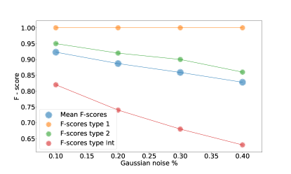
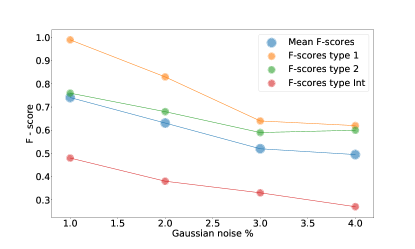
4 إطار عمل القابلية للتفسير
4.1 تصور تدرج المصنف كخريطة بروز
من أجل الحصول على رؤى حول ما تعلمته مصنفاتنا SVM، اتبعنا منهج خريطة البروز الذي وجد تطبيقًا واسعًا في سياق الشبكات العصبية العميقة (Simonyan et al., 2013) وأثبت أنه مفيد جدًا في تفسير مصنفات الصور، مما يوضح أي أجزاء من صورة معينة تساهم بشكل أكبر في التصنيف المتوقع للصورة. في هذا البحث نشير حصريًا إلى المعنى الثاني لمصطلح خريطة البروز المحددة في ورقة Simonyan et al. (2013)، وهي صورة (في حالتنا مصفوفة أحادية البعد تمثل طيفًا AGN محددًا) حيث يمثل كل بكسل مشتق درجة الفصل فيما يتعلق بقيمة البكسل المقابل لصورة معينة وفقًا لمعادلتها. 4. وفي سياق عملنا قمنا ببناء خرائط البروز على النحو التالي:
-
•
لقد أخذنا في الاعتبار درجة الفئة أو، بشكل عام، الاحتمالية المرتبطة بمصنفنا بالفئة المتوقعة لعينة معينة، ، حيث هو التدفق عند الطول الموجي لطيف معين و هو الفئة المتوقعة، على سبيل المثال، النوع الأول؛
-
•
ثم قمنا بحساب تقريب عددي للتدرج ، والذي ينتج متجهًا بنفس طول الطيف الأصلي؛
-
•
أخيرًا، قمنا بتصور متجه التدرج المحسوب باعتباره ترميزًا لونيًا أعلى الطيف الأصلي، مع اللون الأزرق (البرتقالي) المطابق للأطوال الموجية التي يكون فيها مكون التدرج المرتبط موجبًا (سلبيًا).
لحساب التدرج ، يتم اضطراب كل ميزة  للعينة المختارة بشكل فردي بقيمة معينة
للعينة المختارة بشكل فردي بقيمة معينة  ، وتشكيل n أطياف مع الميزة i المضطربة، حيث n هو عدد الميزات، التي في هذا العمل تساوي . ثم يتم استخدام نموذجنا SVM لإعادة تصنيف هذه الأطياف المضطربة، والحصول على قيمة لكل واحد. نظرًا لأنه تم اختيار الاضطراب كـ (أي اضطراب)، فإن / يقارب مكون للتدرج .
تعني القيمة
، وتشكيل n أطياف مع الميزة i المضطربة، حيث n هو عدد الميزات، التي في هذا العمل تساوي . ثم يتم استخدام نموذجنا SVM لإعادة تصنيف هذه الأطياف المضطربة، والحصول على قيمة لكل واحد. نظرًا لأنه تم اختيار الاضطراب كـ (أي اضطراب)، فإن / يقارب مكون للتدرج .
تعني القيمة  القريبة من الصفر (الموضحة باللون الأبيض في الخريطة) أن اضطراب الميزة i لا يغير ثقة المصنف في تصنيف الطيف على أنه ينتمي إلى فئة معينة؛ القيمة الموجبة (الموضحة باللون الأزرق في الخريطة) تعني أن اضطراب الميزة i يقوي الثقة في تنبؤات المصنف للفئة المعينة (يزيد من درجة الفصل) والقيمة السالبة (الموضحة باللون البرتقالي في الخريطة) تقللها.
القريبة من الصفر (الموضحة باللون الأبيض في الخريطة) أن اضطراب الميزة i لا يغير ثقة المصنف في تصنيف الطيف على أنه ينتمي إلى فئة معينة؛ القيمة الموجبة (الموضحة باللون الأزرق في الخريطة) تعني أن اضطراب الميزة i يقوي الثقة في تنبؤات المصنف للفئة المعينة (يزيد من درجة الفصل) والقيمة السالبة (الموضحة باللون البرتقالي في الخريطة) تقللها.
4.2 تقليل الأبعاد للتصور
إن تضمين الجوار العشوائي الموزع (t-SNE van der Maaten & Hinton, 2008) هو خوارزمية تقليل الأبعاد غير الخاضعة للرقابة المستخدمة للتصور واستكشاف البيانات في العديد من إعدادات التعلم الآلي. الهدف من تقليل الأبعاد هو تعيين بيانات عالية الأبعاد إلى مساحة ذات أبعاد أقل (في حالتنا المستوى) مع الحفاظ على المسافات الزوجية للنقاط. من المستحيل القيام بذلك بدقة، لأنه لا يمكن دمج الفضاء عالي الأبعاد في المستوى، ولكن t-SNE يحقق ذلك تقريبًا عن طريق إعطاء الأولوية لمسافات النقاط القريبة من بعضها البعض، بحيث تكون المسافات القصيرة أقل تشويهًا، بينما يتم فقدان البنية واسعة النطاق لمجموعة البيانات في الغالب. يتم الحصول على هذا عن طريق تقليل الخسارة
| (4) |
حيث هو مقياس تشابه بين النقطتين  و
و في الفضاء الأصلي عالي الأبعاد و هو مقياس تشابه (مختلف) في الفضاء منخفض الأبعاد. في حين أن
في الفضاء الأصلي عالي الأبعاد و هو مقياس تشابه (مختلف) في الفضاء منخفض الأبعاد. في حين أن  يضمحل باعتباره غاوسيًا مع المسافة بين النقطة
يضمحل باعتباره غاوسيًا مع المسافة بين النقطة  و، فإن
و، فإن  يضمحل مثل توزيع t للطالب بدرجة واحدة من الحرية، ومن هنا جاء اسم الخوارزمية.
يمكننا أن نرى من المعادلة 4 أن النقاط البعيدة عن بعضها البعض في الفضاء عالي الأبعاد لا تساهم كثيرًا في الخسارة، حيث أن
يضمحل مثل توزيع t للطالب بدرجة واحدة من الحرية، ومن هنا جاء اسم الخوارزمية.
يمكننا أن نرى من المعادلة 4 أن النقاط البعيدة عن بعضها البعض في الفضاء عالي الأبعاد لا تساهم كثيرًا في الخسارة، حيث أن  الخاصة بها تذهب إلى الصفر بشكل أسي مع المسافة المربعة.
تعتمد نتيجة t-SNE على معلمة الحيرة المفرطة، التي تدفع الانحراف المعياري للغاوسي المستخدم لتعريف
الخاصة بها تذهب إلى الصفر بشكل أسي مع المسافة المربعة.
تعتمد نتيجة t-SNE على معلمة الحيرة المفرطة، التي تدفع الانحراف المعياري للغاوسي المستخدم لتعريف  ويمكن تفسيرها بشكل فضفاض على أنها الحجم النموذجي للمجموعات الفرعية المتوقعة في مجموعة بيانات معينة. يمكن العثور على توضيح عملي لتأثير الحيرة المتفاوتة في Wattenberg et al. (2016).
نظرًا لأنه يمكن تعيين الحيرة وفقًا لتقدير مستخدم t-SNE، فإن النتائج التي تعتمد بشدة على هذه المعلمة، مثل على سبيل المثال. لا ينبغي الوثوق بشكل أعمى في بنية التجميع التي تظهر فقط في نطاق ضيق من قيم الحيرة. فيما يلي نتأكد من اختبار نطاق واسع من قيم الحيرة.
نستخدم t-SNE في تنفيذ scikit-learn (Pedregosa et al., 2011) لـ Python. في حين أن استخدامنا الرئيسي للتصور t-SNE هو إظهار مكان وجود أطياف AGN التي اخترناها للفحص من خلال خرائط البروز، وهو أمر مفيد بشكل خاص للأطياف المصنفة بشكل خاطئ، فإننا سنكتسب أيضًا بعض الأفكار المفيدة حول بنية مجموعة البيانات الخاصة بنا من خلال هذا النهج، كما هو موضح أدناه.
ويمكن تفسيرها بشكل فضفاض على أنها الحجم النموذجي للمجموعات الفرعية المتوقعة في مجموعة بيانات معينة. يمكن العثور على توضيح عملي لتأثير الحيرة المتفاوتة في Wattenberg et al. (2016).
نظرًا لأنه يمكن تعيين الحيرة وفقًا لتقدير مستخدم t-SNE، فإن النتائج التي تعتمد بشدة على هذه المعلمة، مثل على سبيل المثال. لا ينبغي الوثوق بشكل أعمى في بنية التجميع التي تظهر فقط في نطاق ضيق من قيم الحيرة. فيما يلي نتأكد من اختبار نطاق واسع من قيم الحيرة.
نستخدم t-SNE في تنفيذ scikit-learn (Pedregosa et al., 2011) لـ Python. في حين أن استخدامنا الرئيسي للتصور t-SNE هو إظهار مكان وجود أطياف AGN التي اخترناها للفحص من خلال خرائط البروز، وهو أمر مفيد بشكل خاص للأطياف المصنفة بشكل خاطئ، فإننا سنكتسب أيضًا بعض الأفكار المفيدة حول بنية مجموعة البيانات الخاصة بنا من خلال هذا النهج، كما هو موضح أدناه.
5 النتائج
5.1 أداء المصنف
| Kernel | Precision | Recall | F-score |
|---|---|---|---|
| Linear | 0.948 | 0.936 | 0.942 |
| RBF | 0.945 | 0.927 | 0.935 |
| Poly 2 | 0.925 | 0.928 | 0.927 |
| Poly 3 | 0.935 | 0.932 | 0.933 |
| Kernel | Precision | Recall | F-score |
|---|---|---|---|
| Linear | 1.0 | 1.0 | 1.0 |
| RBF | 1.0 | 1.0 | 1.0 |
| Poly 2 | 1.0 | 1.0 | 1.0 |
| Poly 3 | 1.0 | 1.0 | 1.0 |
| Type | Precision | Recall | F-score |
|---|---|---|---|
| 1 | 1.0 | 1.0 | 1.0 |
| 2 | 0.96 | 0.97 | 0.96 |
| Int. | 0.89 | 0.83 | 0.86 |
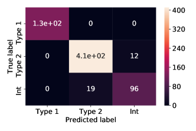
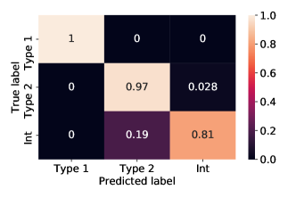
تم الإبلاغ عن قيم المقاييس التي وصلت إليها نماذجنا في مجموعة الاختبار الخاصة بنا في علامة التبويب 6 للتصنيف متعدد الفئات وفي الجدول 7 لتصنيف الفئتين. لقد وجدنا أنها قابلة للمقارنة مع تلك التي تم الحصول عليها في مجموعة التحقق من الصحة، مما يشير إلى عدم حدوث أي فرط في التجهيز. في الجدول 8 يمكن أيضًا رؤية قيمة الدقة والتذكير وF-score التي تم الحصول عليها من خلال أفضل نموذج لدينا للفئات الثلاث: النوع 1 والنوع 2 والنوع المتوسط AGN. من الواضح أن فصل النوع 1 والنوع 2 يمكن أن يتم بسهولة بواسطة كل نواة، مع الاختيار الصحيح للمعلمات الفائقة. من ناحية أخرى، فإن التصنيف متعدد الفئات بما في ذلك أطياف النوع المتوسط، يعد مهمة أكثر صعوبة في الحل، ويتطلب اختيارًا دقيقًا للمعلمات الفائقة من أجل تحقيق أداء عالٍ. يمكن رؤية مصفوفة الارتباك لأفضل نموذجين للتصنيف متعدد الفئات في الشكل 2 ومصفوفة الارتباك المقيسة في الشكل 2. حتى لو كان أداء النواة الخطية أفضل قليلاً من RBF، فإن كلا النموذجين قادران على تصنيف غالبية الأطياف، ويفشلان فقط في تصنيف عدد صغير من النوع 2 وأطياف النوع المتوسط. على وجه التحديد، تم تصنيف 22 الأطياف المتوسطة، أكثر من 115 إجماليًا، كنوع 2 بواسطة نموذج RBF و12 نوع 2، أكثر من 423 إجمالي، كمتوسط؛ فشل النموذج الخطي في تصنيف 19 الأطياف المتوسطة، على نفس إجمالي 115، من خلال تصنيفها كنوع 2 و12 نوع 2، على نفس إجمالي 423، المصنف على أنه متوسط. إلى حد ما، هذه نتيجة متوقعة، لأن التمييز بين النوع 2 والمتوسط AGN صعب في وجود أطياف ذات S/N منخفضة. ولذلك، فإن عدم اليقين هذا في التمييز بين الأطياف المتوسطة والنوع 2 AGN في وجود S/N منخفض، يمكن أن يؤثر على نتيجة التصنيف الآلي.
5.2 تعقيد وقت التدريب
| Linear | RBF | Poly 2 | Poly 3 |
| 15.13 s | 13.34 s | 12.94 s | 12.96 s |
تم أيضًا تقييم كل نواة من حيث الوقت الحسابي للتدريب. يتم تقييم الوقت الحسابي من خلال أخذ متوسط الوقت 10 للتدريبات المختلفة (باستخدام كل من مجموعات التدريب والتحقق لهذا الغرض) لكل نواة. النتائج المقدمة في علامة التبويب. 9 تبين أن النواة متعددة الحدود هي الأسرع، ولا سيما متعددة الحدود من الدرجة 2. من المثير للدهشة أن النواة الخطية تبدو الأبطأ. قد يكون التفسير المحتمل هو حقيقة أن تطبيق scikit-learn المستخدم في هذا العمل (libsvm المستند إلى (Chang & Lin, 2011)) أقل كفاءة بالنسبة للحالة الخطية، كما هو مذكور في وثائق scikit-learn (Pedregosa et al., 2011). توفر الوثائق أيضًا تقديرًا للتعقيد الزمني، بتدوين كبير O، لتنفيذ SVM، والذي يتراوح بين و (Pedregosa et al., 2011). تم إجراء كل عملية حسابية في هذه الخطوة على وحدة المعالجة المركزية Intel(R) Core(TM) (2.60).
5.3 تصور الأطياف باستخدام t-SNE
بفضل الاستيفاء المستخدم في هذا العمل، تبين أن مساحة الأطياف AGN ذات أبعاد  ، في حين أن الأطياف الأصلية تتألف من عدد متغير من النقاط عادة ما تصل إلى بضعة آلاف. ومع ذلك، فإن أبعاد مساحة الميزة لا تزال عالية جدًا.
استخدمنا بعد ذلك t-SNE لتعيين مجموعة بيانات الأطياف الخاصة بنا على مستوى. تم تطبيق الخوارزمية أولاً على البيانات التي لم يتم قياسها ولا تعني تطبيعها لمقارنة نتائجها بين هذه الحالة والحالة ذات الميزات التي تمت معالجتها مسبقًا كما هو موضح أدناه.
يمكن رؤية نتيجة t-SNE المطبقة فقط على النوع 1 والنوع 2 AGN في الشكل 10. في المستوى المضمن، اكتب 1 AGN واكتب 2 AGN منفصلين بشكل واضح، مع عدد قليل من القيم المتطرفة. تم ضبط معلمة الحيرة على
، في حين أن الأطياف الأصلية تتألف من عدد متغير من النقاط عادة ما تصل إلى بضعة آلاف. ومع ذلك، فإن أبعاد مساحة الميزة لا تزال عالية جدًا.
استخدمنا بعد ذلك t-SNE لتعيين مجموعة بيانات الأطياف الخاصة بنا على مستوى. تم تطبيق الخوارزمية أولاً على البيانات التي لم يتم قياسها ولا تعني تطبيعها لمقارنة نتائجها بين هذه الحالة والحالة ذات الميزات التي تمت معالجتها مسبقًا كما هو موضح أدناه.
يمكن رؤية نتيجة t-SNE المطبقة فقط على النوع 1 والنوع 2 AGN في الشكل 10. في المستوى المضمن، اكتب 1 AGN واكتب 2 AGN منفصلين بشكل واضح، مع عدد قليل من القيم المتطرفة. تم ضبط معلمة الحيرة على  في الشكل 10. مع درجة أقل من الحيرة، كان الفصل بين النوعين أقل وضوحًا إلى حد ما، لكنه لا يزال قائمًا كما هو موضح في الشكل 11. بالإضافة إلى بعض الهياكل الأصغر حجما
يمكن تقديره.
قمنا أيضًا بتطبيق t-SNE على مجموعة البيانات بأكملها، بما في ذلك النوع المتوسط AGN أيضًا. يمكن رؤية النتيجة في الشكل 4 (في هذه الحالة أيضًا تم ضبط الحيرة على 50). كما هو متوقع، لا يمكن فصل النوع المتوسط AGN بشكل جيد عن الفئتين الأخريين، ولا سيما من النوع 2 الأطياف التي تبدو مختلطة معها إلى حد ما. ومع ذلك، هناك مجموعة واضحة من أطياف النوع المتوسط التي تربط المناطق التي يشغلها النوع 1 وأطياف النوع 2، وفقًا لتعريف ”النوع المتوسط”. في حين أن المجموعات الزائفة قد تظهر أحيانًا في مؤامرات t-SNE، فمن المحتمل أن تكون هذه ميزة ذات دوافع جسدية، لأنها تستمر مع اختلاف الحيرة (انظر أدناه).
في الوقت الحالي، لا يمكننا إلا التكهن بالمعنى المادي للمجموعتين الفرعيتين الأخريين من أطياف النوع المتوسط والتي يبدو أنها تتجمع في جزر متميزة في أقصى المنطقة التي يشغلها أطياف النوع 2. ربما ينبغي معالجة هذا عن طريق الفحص البصري المباشر للأطياف، كجزء من العمل المستقبلي.
في الشكل 12، نرسم المساحات المضمنة لقيم مختلفة من الحيرة، مما يوضح أن النتائج الرئيسية التي أوضحناها هنا قوية بالنسبة للتغييرات في معلمة الحيرة؛ ويناقش هذا بمزيد من التفصيل في الملحق.
في الشكل 10. مع درجة أقل من الحيرة، كان الفصل بين النوعين أقل وضوحًا إلى حد ما، لكنه لا يزال قائمًا كما هو موضح في الشكل 11. بالإضافة إلى بعض الهياكل الأصغر حجما
يمكن تقديره.
قمنا أيضًا بتطبيق t-SNE على مجموعة البيانات بأكملها، بما في ذلك النوع المتوسط AGN أيضًا. يمكن رؤية النتيجة في الشكل 4 (في هذه الحالة أيضًا تم ضبط الحيرة على 50). كما هو متوقع، لا يمكن فصل النوع المتوسط AGN بشكل جيد عن الفئتين الأخريين، ولا سيما من النوع 2 الأطياف التي تبدو مختلطة معها إلى حد ما. ومع ذلك، هناك مجموعة واضحة من أطياف النوع المتوسط التي تربط المناطق التي يشغلها النوع 1 وأطياف النوع 2، وفقًا لتعريف ”النوع المتوسط”. في حين أن المجموعات الزائفة قد تظهر أحيانًا في مؤامرات t-SNE، فمن المحتمل أن تكون هذه ميزة ذات دوافع جسدية، لأنها تستمر مع اختلاف الحيرة (انظر أدناه).
في الوقت الحالي، لا يمكننا إلا التكهن بالمعنى المادي للمجموعتين الفرعيتين الأخريين من أطياف النوع المتوسط والتي يبدو أنها تتجمع في جزر متميزة في أقصى المنطقة التي يشغلها أطياف النوع 2. ربما ينبغي معالجة هذا عن طريق الفحص البصري المباشر للأطياف، كجزء من العمل المستقبلي.
في الشكل 12، نرسم المساحات المضمنة لقيم مختلفة من الحيرة، مما يوضح أن النتائج الرئيسية التي أوضحناها هنا قوية بالنسبة للتغييرات في معلمة الحيرة؛ ويناقش هذا بمزيد من التفصيل في الملحق.
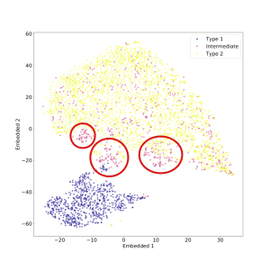
5.4 خرائط الأهمية
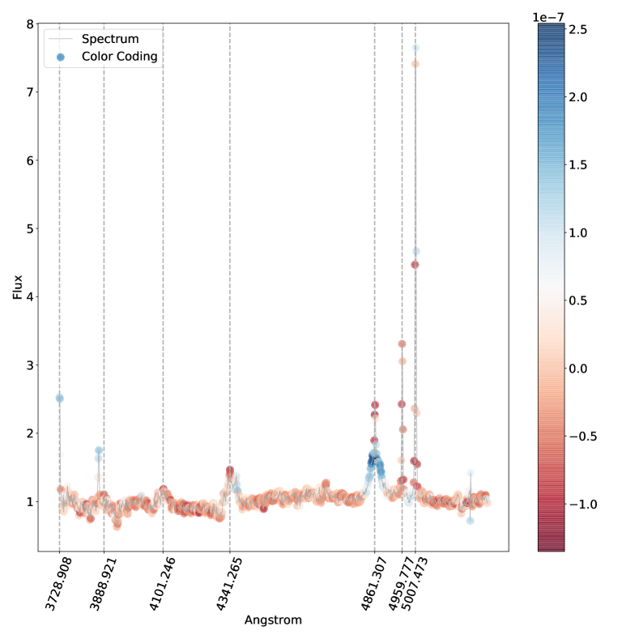
 باللون الأحمر، بينما الذيول باللون الأزرق: هذا يتوافق مع المصنف الذي يستخدم عرض الخط
باللون الأحمر، بينما الذيول باللون الأزرق: هذا يتوافق مع المصنف الذي يستخدم عرض الخط  لاتخاذ قراره.
لاتخاذ قراره.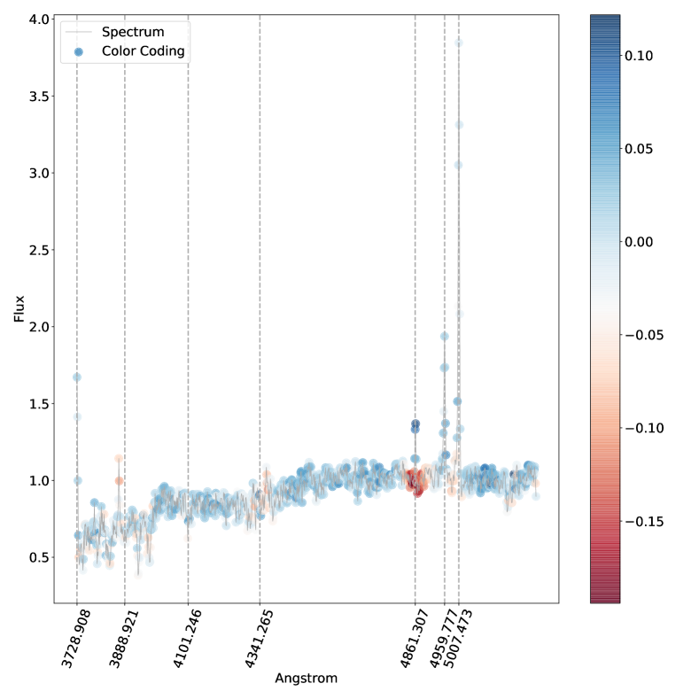
فيما يلي نتناول مباشرة مشكلة الفئات المتعددة (النوع 1، النوع 2، المتوسط) بسبب اهتمامها العلمي العالي وبسبب حقيقة أنه في مسألة الفئتين لا نجد أي حالات مصنفة بشكل خاطئ، أي أن لدينا دقة مثالية اسميًا كما تمت مناقشته أعلاه. وبالتالي استخدمنا خرائط البروز للتحقيق في الأطياف المصنفة بشكل خاطئ والمصنفة بشكل صحيح في مشكلة متعددة الفئات. تُظهر خرائط الأهمية للطيف المصنف بشكل صحيح (الشكل 5) والطيف المصنف بشكل خاطئ (الشكل 6) أن الخطوط البصرية الرئيسية التي يستخدمها البشر لتصنيف أطياف AGN يتم التعرف عليها أيضًا بواسطة SVM كميزات مهمة.
في كل خريطة بارزة نرسم الخطوط الرئيسية التي يمكن استخدامها لتصنيف AGN الأطياف (أي ،  ، ،
، ،  ،
،  ،
، ![$[O III] 4959$](equations/eq_0115.svg) و
و ![$[O III] 5007$](equations/eq_0116.svg) ) يتم تمييزها بخطوط عمودية رمادية متقطعة خطوط.
تلعب المنطقة المحيطة بالخط
) يتم تمييزها بخطوط عمودية رمادية متقطعة خطوط.
تلعب المنطقة المحيطة بالخط  على وجه الخصوص دورًا مهمًا، كما يمكن رؤيته في كل من الشكل 5 والشكل 6 حيث يظهر مركز الخط وذيله بألوان متقابلة، مما يدل على التأثير المعاكس على درجة الفصل المتمثل في زيادة التدفق. على وجه الخصوص، الشكل 6 هو نوع متوسط بثقة (
على وجه الخصوص دورًا مهمًا، كما يمكن رؤيته في كل من الشكل 5 والشكل 6 حيث يظهر مركز الخط وذيله بألوان متقابلة، مما يدل على التأثير المعاكس على درجة الفصل المتمثل في زيادة التدفق. على وجه الخصوص، الشكل 6 هو نوع متوسط بثقة ( ) تم تصنيفه بشكل خاطئ على أنه النوع 2، حيث يعتمد قرار النموذج في الغالب على السطر . ويتجلى ذلك من خلال النظر إلى المنطقة المجاورة للخط
) تم تصنيفه بشكل خاطئ على أنه النوع 2، حيث يعتمد قرار النموذج في الغالب على السطر . ويتجلى ذلك من خلال النظر إلى المنطقة المجاورة للخط  ، حيث تكون السلسلة المتصلة هي النقطة الأكثر احمرارًا في خريطة البروز. يوضح هذا أن سوء التصنيف يرجع إلى حد كبير إلى عدم وجود مكون واسع في
، حيث تكون السلسلة المتصلة هي النقطة الأكثر احمرارًا في خريطة البروز. يوضح هذا أن سوء التصنيف يرجع إلى حد كبير إلى عدم وجود مكون واسع في  (نذكر هنا أن اللون الأحمر يعني أن زيادة قيمة التدفق في ذلك الموقع من شأنها أن تقلل من الثقة في الفئة المتوقعة). المناطق الأخرى من خريطة البروز التي يبدو أنها تساهم في التصنيف الخاطئ هي خطوط الهيدروجين الأخرى، لكن مساهمتها بسيطة جدًا كما يتضح من الترميز اللوني. ومع ذلك، فإن نمط الترميز اللوني الخاص بهم متشابه، مما يشير إلى أن عدم وجود مكون واسع هو الميزة الرئيسية الدافعة للتصنيف الخاطئ هنا. لتصنيف هذا الطيف بشكل صحيح، من المحتمل أن نحتاج إلى مراقبة الخط ، الذي لم يتم تضمينه في النطاق الطيفي الحالي، وإلا فإن النوع المتوسط ، والذي سيظهر توسعًا فقط على الخط
(نذكر هنا أن اللون الأحمر يعني أن زيادة قيمة التدفق في ذلك الموقع من شأنها أن تقلل من الثقة في الفئة المتوقعة). المناطق الأخرى من خريطة البروز التي يبدو أنها تساهم في التصنيف الخاطئ هي خطوط الهيدروجين الأخرى، لكن مساهمتها بسيطة جدًا كما يتضح من الترميز اللوني. ومع ذلك، فإن نمط الترميز اللوني الخاص بهم متشابه، مما يشير إلى أن عدم وجود مكون واسع هو الميزة الرئيسية الدافعة للتصنيف الخاطئ هنا. لتصنيف هذا الطيف بشكل صحيح، من المحتمل أن نحتاج إلى مراقبة الخط ، الذي لم يتم تضمينه في النطاق الطيفي الحالي، وإلا فإن النوع المتوسط ، والذي سيظهر توسعًا فقط على الخط  قد يظهر كنوع 2، مع وجود خط
قد يظهر كنوع 2، مع وجود خط  غير موسع تقريبًا.
يجب مقارنة هذه النتائج مع الشكل 5، حيث يظهر الترميز اللوني نفس السلوك، ولكن في الاتجاه المعاكس: حيث تظهر ذيول
غير موسع تقريبًا.
يجب مقارنة هذه النتائج مع الشكل 5، حيث يظهر الترميز اللوني نفس السلوك، ولكن في الاتجاه المعاكس: حيث تظهر ذيول  ملونة باللون الأزرق، مما يوضح أن زيادة التدفق هناك سيؤدي إلى تصنيف أكثر ثقة كنوع متوسط. وينطبق هذا بالمثل على خطوط الهيدروجين الأخرى.
على سبيل المثال، تؤدي زيادة التدفق في أطراف الخط
ملونة باللون الأزرق، مما يوضح أن زيادة التدفق هناك سيؤدي إلى تصنيف أكثر ثقة كنوع متوسط. وينطبق هذا بالمثل على خطوط الهيدروجين الأخرى.
على سبيل المثال، تؤدي زيادة التدفق في أطراف الخط  ، أي زيادة عرضه لارتفاع معين للذروة المركزية إلى تقليل احتمالية التصنيف لتصنيف الطيف في الشكل 5 كمتوسط، بينما يزيد من احتمال التصنيف it كنوع 1، كما هو متوقع؛ زيادة التدفق في المركز له تأثير معاكس تمامًا.
هذه النتيجة متوقعة لأن ملف تعريف
، أي زيادة عرضه لارتفاع معين للذروة المركزية إلى تقليل احتمالية التصنيف لتصنيف الطيف في الشكل 5 كمتوسط، بينما يزيد من احتمال التصنيف it كنوع 1، كما هو متوقع؛ زيادة التدفق في المركز له تأثير معاكس تمامًا.
هذه النتيجة متوقعة لأن ملف تعريف  الأوسع، الذي يشير إلى النوع 1 AGN، من شأنه أن يغير بشكل كبير شكل الطيف بجوار الخط.
ومن المثير للاهتمام أن خرائط الأهمية تظهر أن الاستمرارية بين و
الأوسع، الذي يشير إلى النوع 1 AGN، من شأنه أن يغير بشكل كبير شكل الطيف بجوار الخط.
ومن المثير للاهتمام أن خرائط الأهمية تظهر أن الاستمرارية بين و تؤثر أيضًا على نتائج التصنيف. وهذا أمر معقول أيضًا، مع الأخذ في الاعتبار كيفية اختلاف السلسلة بين أطياف النوع 1 والنوع 2 المتوسط.في الشكل. 7 نعرض الأطياف التي حسبنا لها خريطة بروز مسقطة على المستوى المضمن t-SNE. في الشكل، تتوافق الألواح الحمراء مع الأطياف المصنفة بشكل خاطئ والألواح الخضراء تتوافق مع الأطياف المصنفة بشكل صحيح. يمكن رؤية خرائط الأهمية المقابلة في الشكل 8 للأطياف المصنفة بشكل خاطئ، وفي الشكل 9 للأطياف المصنفة بشكل صحيح. يتوافق الترقيم مع الرقم المذكور في الشكل 7.
بالنسبة للأطياف في الشكل 8 حيث تم تصنيف الوسيط بشكل خاطئ على أنه النوع 2، فإن سبب سوء التصنيف كما هو مستنتج من خريطة البروز هو نفسه كما تمت مناقشته أعلاه في الشكل 6. عندما يحدث التصنيف الخاطئ المعاكس، نلاحظ أن الخط
تؤثر أيضًا على نتائج التصنيف. وهذا أمر معقول أيضًا، مع الأخذ في الاعتبار كيفية اختلاف السلسلة بين أطياف النوع 1 والنوع 2 المتوسط.في الشكل. 7 نعرض الأطياف التي حسبنا لها خريطة بروز مسقطة على المستوى المضمن t-SNE. في الشكل، تتوافق الألواح الحمراء مع الأطياف المصنفة بشكل خاطئ والألواح الخضراء تتوافق مع الأطياف المصنفة بشكل صحيح. يمكن رؤية خرائط الأهمية المقابلة في الشكل 8 للأطياف المصنفة بشكل خاطئ، وفي الشكل 9 للأطياف المصنفة بشكل صحيح. يتوافق الترقيم مع الرقم المذكور في الشكل 7.
بالنسبة للأطياف في الشكل 8 حيث تم تصنيف الوسيط بشكل خاطئ على أنه النوع 2، فإن سبب سوء التصنيف كما هو مستنتج من خريطة البروز هو نفسه كما تمت مناقشته أعلاه في الشكل 6. عندما يحدث التصنيف الخاطئ المعاكس، نلاحظ أن الخط  يظهر غالبًا مضمنًا في الامتصاص النجمي الأساسي، وهو موقف من المحتمل ألا يكون شائعًا بدرجة كافية في مجموعة تدريبنا حتى يتعلم النموذج كيفية التعامل معه بشكل صحيح.
يمكن رؤية احتمالات التصنيف المحسوبة بواسطة المصنف SVM للأطياف المصنفة بشكل خاطئ في الجدول 10 وللأطياف المصنفة بشكل صحيح في الجدول 11.
تصنيف الأطياف المصنفة بثقة عالية، مثل الطيف 14-th في الشكل 9، لا يتغير بشكل كبير في ظل الاضطرابات الصغيرة، كما هو الحال مع الاضطرابات المستخدمة في هذا العمل لحساب مشتق الثقة. ويمكن تفسير ذلك على أنه حقيقة أن الميزات الفردية، حتى لو كانت مضطربة، لا تغير التنبؤ عالي الثقة، موضحًا أن النتائج التي تم الحصول عليها باستخدام SVM هي قوية.
يظهر غالبًا مضمنًا في الامتصاص النجمي الأساسي، وهو موقف من المحتمل ألا يكون شائعًا بدرجة كافية في مجموعة تدريبنا حتى يتعلم النموذج كيفية التعامل معه بشكل صحيح.
يمكن رؤية احتمالات التصنيف المحسوبة بواسطة المصنف SVM للأطياف المصنفة بشكل خاطئ في الجدول 10 وللأطياف المصنفة بشكل صحيح في الجدول 11.
تصنيف الأطياف المصنفة بثقة عالية، مثل الطيف 14-th في الشكل 9، لا يتغير بشكل كبير في ظل الاضطرابات الصغيرة، كما هو الحال مع الاضطرابات المستخدمة في هذا العمل لحساب مشتق الثقة. ويمكن تفسير ذلك على أنه حقيقة أن الميزات الفردية، حتى لو كانت مضطربة، لا تغير التنبؤ عالي الثقة، موضحًا أن النتائج التي تم الحصول عليها باستخدام SVM هي قوية.
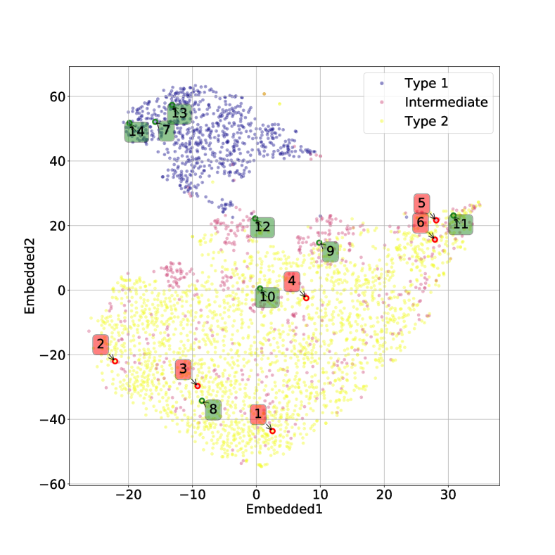
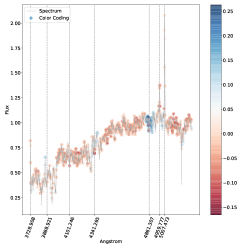
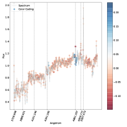
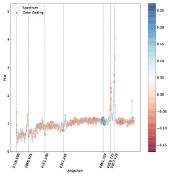
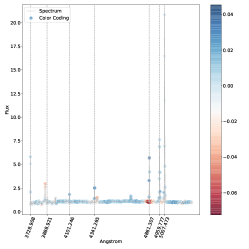
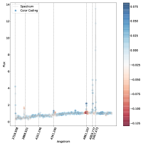
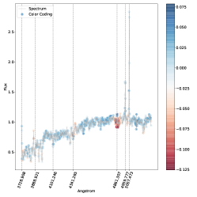
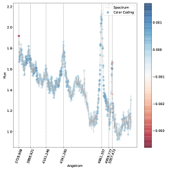
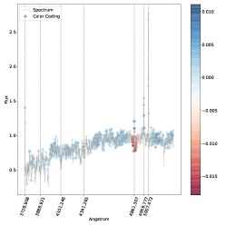
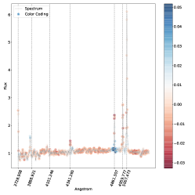
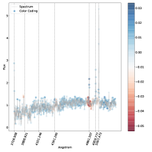
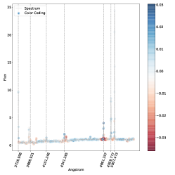
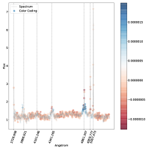
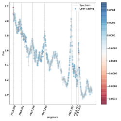
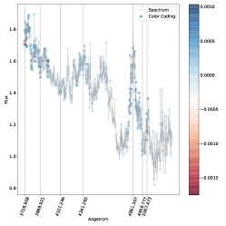
| Index | Prob. type 1 | Prob. int. | Prob.type 2 | True class |
|---|---|---|---|---|
| 1 | 0.0 | 0.41 | 0.58 | Type 2 |
| 2 | 0.0 | 0.68 | 0.32 | Type 2 |
| 3 | 0.01 | 0.13 | 0.86 | Int. |
| 4 | 0.0 | 0.48 | 0.52 | Type 2 |
| 5 | 0.0 | 0.07 | 0.93 | Int. |
| 6 | 0.0 | 0.14 | 0.86 | Int. |
| Index | Prob. type 1 | Prob. int. | Prob.type 2 | True class |
|---|---|---|---|---|
| 7 | 0.99 | 0.01 | 0.00 | Type 1 |
| 8 | 0.00 | 0.02 | 0.98 | Type 2 |
| 9 | 0.00 | 0.95 | 0.05 | Int. |
| 10 | 0.00 | 0.05 | 0.95 | Type 2 |
| 11 | 0.00 | 0.05 | 0.95 | Type 2 |
| 12 | 0.00 | 1.00 | 0.00 | Int. |
| 13 | 1.00 | 0.00 | 0.00 | Type 1 |
| 14 | 0.99 | 0.01 | 0.00 | Type 1 |
6 الاستنتاجات
لقد قمنا بتدريب نموذج آلة ناقل الدعم لتصنيف الأطياف AGN، وحصلنا على نتائج دقيقة إلى حد ما على مجموعة اختبار لم يتم رؤيتها في التدريب (F-score من ). في حين أنه من المغري تطبيق النموذج المُدرب على عينة كبيرة من الأطياف، فإننا نرى أنه من المهم أن نفهم أولاً سبب قيام المُصنف بإرجاع التنبؤ الذي قام به. لقد أظهرنا أن أدوات التفسير البسيطة، مثل خريطة البروز، تسمح لنا بإنجاز ذلك بسهولة، على الأقل على أساس كل طيف على حدة. على الرغم من أنه من المستحيل بشكل عام تحقيق تفسير عام للمعايير المستخدمة من قبل المصنف (كما يمكن تحقيقه عن طريق بعض طرق التعلم الآلي القابلة للتفسير) لمصنف الصندوق الأسود، فإن خرائط البروز تجعل من الممكن فهم طريقة عمل مصنف الصندوق الأسود في جوار أي نقطة بيانات معينة.
قمنا بحساب خرائط البروز لعينة عشوائية من الأطياف المصنفة بشكل صحيح والمصنفة بشكل خاطئ. بشكل عام نجد أن مناطق الطيف الأكثر تأثيرًا على تنبؤات المصنف تشبه تلك التي يستخدمها خبير بشري، أي تلك الموجودة حول الخطوط الطيفية ![$[O II] 3727$](equations/eq_0134.svg) ، ،
، ،  ، ، ، و . كما أن الطريقة التي يستخدم بها النموذج المعلومات في هذه المناطق تتوافق مع توقعاتنا: على سبيل المثال يعتمد ضمنيًا على عرض الخط
، ، ، و . كما أن الطريقة التي يستخدم بها النموذج المعلومات في هذه المناطق تتوافق مع توقعاتنا: على سبيل المثال يعتمد ضمنيًا على عرض الخط  مما يزيد من احتمال تصنيف الأطياف كنوع 1.
وهكذا نستنتج أنه، على الأقل فيما يتعلق بالأطياف التي أخذناها في الاعتبار، يعمل مصنفنا بنفس الطريقة التي يعمل بها الإنسان، ولكن بشكل تلقائي وأسرع بكثير. وهذا أمر مطمئن للغاية فيما يتعلق بإمكانية تطبيق مصنفات التعلم الآلي على مجموعات البيانات الكبيرة من الأطياف التي ستنتج عن المسوحات القادمة، والتي لن تكون قابلة للتصنيف البشري المباشر.
لقد تصورنا أيضًا مساحة الميزة عالية الأبعاد للأطياف باستخدام خوارزمية t-SNE، التي تقوم بتعيين الأطياف إلى نقاط في المستوى أثناء محاولة الحفاظ على المسافات الزوجية المحلية. نجد أن أطياف النوع 1 والنوع 2 تم تعيينها لمناطق متميزة من المستوى، مما يشكل ”جزيرتين” يفصل بينهما برزخ واضح المعالم. إذا تم تضمين أطياف النوع المتوسط أيضًا، فإن بعضها يملأ البرزخ، ويشكل جسرًا بين النوع 1 والنوع 2، كما هو متوقع من تعريف النوع المتوسط. ومع ذلك، فإن العديد من الأطياف من النوع المتوسط تنتهي في نفس المنطقة التي يشغلها أطياف النوع 2، ويبدو أنها مختلطة معهم. ربما يكون تصنيف هذه الأطياف على أنها من النوع المتوسط أمرًا مشكوكًا فيه في المقام الأول. ومن المثير للاهتمام أن كلا من أطياف النوع المتوسط والنوع 2 يُظهران بنية عنقودية فرعية في المستوى t-SNE. في حين أن هذا قد يكون نتيجة اصطناعية لـ t-SNE، فإنه يستمر عند استخدام قيم مختلفة لمعلمة الحيرة المفرطة (الحيرة تتوافق تقريبًا مع الحجم المتوقع للمجموعات في مجموعة البيانات) مما يشير إلى أن النتيجة حقيقية. هناك حاجة إلى مزيد من العمل لتوصيف هذه المجموعات الفرعية، وربما مقارنتها مع الأنواع الفرعية AGN المقترحة؛ ونحن نخطط لتنفيذ ذلك في ورقة لاحقة.
مما يزيد من احتمال تصنيف الأطياف كنوع 1.
وهكذا نستنتج أنه، على الأقل فيما يتعلق بالأطياف التي أخذناها في الاعتبار، يعمل مصنفنا بنفس الطريقة التي يعمل بها الإنسان، ولكن بشكل تلقائي وأسرع بكثير. وهذا أمر مطمئن للغاية فيما يتعلق بإمكانية تطبيق مصنفات التعلم الآلي على مجموعات البيانات الكبيرة من الأطياف التي ستنتج عن المسوحات القادمة، والتي لن تكون قابلة للتصنيف البشري المباشر.
لقد تصورنا أيضًا مساحة الميزة عالية الأبعاد للأطياف باستخدام خوارزمية t-SNE، التي تقوم بتعيين الأطياف إلى نقاط في المستوى أثناء محاولة الحفاظ على المسافات الزوجية المحلية. نجد أن أطياف النوع 1 والنوع 2 تم تعيينها لمناطق متميزة من المستوى، مما يشكل ”جزيرتين” يفصل بينهما برزخ واضح المعالم. إذا تم تضمين أطياف النوع المتوسط أيضًا، فإن بعضها يملأ البرزخ، ويشكل جسرًا بين النوع 1 والنوع 2، كما هو متوقع من تعريف النوع المتوسط. ومع ذلك، فإن العديد من الأطياف من النوع المتوسط تنتهي في نفس المنطقة التي يشغلها أطياف النوع 2، ويبدو أنها مختلطة معهم. ربما يكون تصنيف هذه الأطياف على أنها من النوع المتوسط أمرًا مشكوكًا فيه في المقام الأول. ومن المثير للاهتمام أن كلا من أطياف النوع المتوسط والنوع 2 يُظهران بنية عنقودية فرعية في المستوى t-SNE. في حين أن هذا قد يكون نتيجة اصطناعية لـ t-SNE، فإنه يستمر عند استخدام قيم مختلفة لمعلمة الحيرة المفرطة (الحيرة تتوافق تقريبًا مع الحجم المتوقع للمجموعات في مجموعة البيانات) مما يشير إلى أن النتيجة حقيقية. هناك حاجة إلى مزيد من العمل لتوصيف هذه المجموعات الفرعية، وربما مقارنتها مع الأنواع الفرعية AGN المقترحة؛ ونحن نخطط لتنفيذ ذلك في ورقة لاحقة.
Acknowledgements.
حصل هذا المشروع على تمويل من European Union’s Horizon برنامج البحث والابتكار بموجب اتفاقية المنحة Marie Skłodowska-Curie رقم . تعتمد هذه المادة على العمل المدعوم من Tamkeen بموجب منحة NYU Abu Dhabi Research Institute CAP3.
برنامج البحث والابتكار بموجب اتفاقية المنحة Marie Skłodowska-Curie رقم . تعتمد هذه المادة على العمل المدعوم من Tamkeen بموجب منحة NYU Abu Dhabi Research Institute CAP3.
تم توفير التمويل لـ Sloan Digital Sky Survey IV بواسطة Alfred P. Sloan Foundation، وU.S. Department of Energy Office of Science، وParticipating Institutions. SDSS-IV يقر الدعم والموارد من Center for High-Performance Computing في University of Utah. موقع الويب SDSS هو www.sdss.org. تتم إدارة SDSS-IV بواسطة Astrophysical Research Consortium لـ Participating Institutions من SDSS Collaboration بما في ذلك Brazilian Participation Group، Carnegie Institution for Science، Carnegie Mellon University، Chilean Participation Group، French Participation Group، Harvard-Smithsonian Center for Astrophysics، Instituto de Astrofísica de Canarias, The Johns Hopkins University, Kavli Institute for the Physics and Mathematics of the Universe (IPMU) / University of Tokyo، Korean Participation Group، Lawrence Berkeley National Laboratory، Leibniz Institut für Astrophysik Potsdam (AIP)، Max-Planck-Institut für Astronomie (MPIA هايدلبرغ)، Max-Planck-Institut für Astrophysik (MPA غارشينغ)، Max-Planck-Institut für Extraterrestrische Physik (MPE)، National Astronomical Observatories of China, New Mexico State University, New York University, University of Notre Dame, Observatário Nacional / إم سي تي آي، The Ohio State University، Pennsylvania State University, Shanghai Astronomical Observatory, United Kingdom Participation Group, Universidad Nacional Autónoma de México, University of Arizona, University of Colorado Boulder, University of Oxford, University of Portsmouth, University of Utah, University of Virginia, University of Washington, University of Wisconsin, Vanderbilt University و Yale University. يمكن العثور على الكود الذي يستند إليه هذا العمل على الرابط التالي https://gitlab.com/tobia.peruzzi/agn_spectra
References
- Anders et al. (2018) Anders, F., Chiappini, C., Santiago, B. X., et al. 2018, A&A, 619, A125
- Antonucci (1993) Antonucci, R. 1993, ARA&A, 31, 473
- Askar et al. (2019) Askar, A., Askar, A., Pasquato, M., & Giersz, M. 2019, MNRAS, 485, 5345
- Berton et al. (2020) Berton, M., Björklund, I., Lähteenmäki, A., et al. 2020, Contributions of the Astronomical Observatory Skalnate Pleso, 50, 270
- Boroson & Green (1992) Boroson, T. A. & Green, R. F. 1992, ApJS, 80, 109
- Chang & Lin (2011) Chang, C.-C. & Lin, C.-J. 2011, ACM Transactions on Intelligent Systems and Technology, 2, 27:1, software available at http://www.csie.ntu.edu.tw/~cjlin/libsvm
- Chinchor (1992) Chinchor, N. 1992, in Proceedings of the 4th conference on Message understanding, Association for Computational Linguistics, 30–50
- Cortes & Vapnik (1995) Cortes, C. & Vapnik, V. 1995, Machine learning, 20, 273
- Elitzur (2012) Elitzur, M. 2012, ApJ, 747, L33
- Fluke & Jacobs (2020) Fluke, C. J. & Jacobs, C. 2020, WIREs Data Mining and Knowledge Discovery, 10, e1349
- Furfaro et al. (2019) Furfaro, R., Linares, R., & Reddy, V. 2019, in Proceedings of the ¡A href=“https://www.amostech.com”¿Advanced Maui Optical and Space Surveillance Technologies Conference¡/A, 17
- González-Martín et al. (2014) González-Martín, O., Díaz-González, D., Acosta-Pulido, J. A., et al. 2014, A&A, 567, A92
- Järvelä et al. (2020) Järvelä, E., Berton, M., Ciroi, S., et al. 2020, A&A, 636, L12
- Kewley et al. (2006) Kewley, L. J., Groves, B., Kauffmann, G., & Heckman, T. 2006, MNRAS, 372, 961
- Khachikian & Weedman (1974) Khachikian, E. Y. & Weedman, D. W. 1974, ApJ, 192, 581
- Khachikyan & Weedman (1971) Khachikyan, É. Y. & Weedman, D. W. 1971, Astrophysics, 7, 231
- Kline & Prša (2020) Kline, T. R. & Prša, A. 2020, in American Astronomical Society Meeting Abstracts, American Astronomical Society Meeting Abstracts, 170.30
- Kos et al. (2018) Kos, J., Bland-Hawthorn, J., Freeman, K., et al. 2018, MNRAS, 473, 4612
- Lamb et al. (2019) Lamb, K., Malhotra, G., Vlontzos, A., et al. 2019, arXiv e-prints, arXiv:1910.03085
- Lynden-Bell (1969) Lynden-Bell, D. 1969, Nature, 223, 690
- Ma et al. (2019) Ma, Z., Xu, H., Zhu, J., et al. 2019, ApJS, 240, 34
- Manning et al. (2008) Manning, C. D., Schütze, H., & Raghavan, P. 2008, Introduction to information retrieval (Cambridge university press)
- Marziani et al. (2013) Marziani, P., Sulentic, J. W., Plauchu-Frayn, I., & del Olmo, A. 2013, A&A, 555, A89
- Molnar (2019) Molnar, C. 2019, Interpretable machine learning (Lulu. com)
- Osterbrock (1981) Osterbrock, D. E. 1981, ApJ, 249, 462
- Osterbrock (1991) Osterbrock, D. E. 1991, Reports on Progress in Physics, 54, 579
- Osterbrock & Koski (1976) Osterbrock, D. E. & Koski, A. T. 1976, MNRAS, 176, 61P
- Padovani et al. (2017) Padovani, P., Alexander, D. M., Assef, R. J., et al. 2017, A&A Rev., 25, 2
- Pedregosa et al. (2011) Pedregosa, F., Varoquaux, G., Gramfort, A., et al. 2011, Journal of Machine Learning Research, 12, 2825
- Peek & Burkhart (2019) Peek, J. E. G. & Burkhart, B. 2019, ApJ, 882, L12
- Portillo et al. (2020) Portillo, S. K. N., Parejko, J. K., Vergara, J. R., & Connolly, A. J. 2020, arXiv e-prints, arXiv:2002.10464
- Rawson et al. (1996) Rawson, D. M., Bailey, J., & Francis, P. J. 1996, PASA, 13, 207
- Rees (1984) Rees, M. J. 1984, ARA&A, 22, 471
- Salpeter (1964) Salpeter, E. E. 1964, ApJ, 140, 796
- Simonyan et al. (2013) Simonyan, K., Vedaldi, A., & Zisserman, A. 2013, arXiv preprint arXiv:1312.6034
- Steinhardt et al. (2020a) Steinhardt, C. L., Kragh Jespersen, C., Severin, J. B., et al. 2020a, in American Astronomical Society Meeting Abstracts, American Astronomical Society Meeting Abstracts, 440.04
- Steinhardt et al. (2020b) Steinhardt, C. L., Weaver, J. R., Maxfield, J., et al. 2020b, ApJ, 891, 136
- Sulentic et al. (2007) Sulentic, J. W., Bachev, R., Marziani, P., Negrete, C. A., & Dultzin, D. 2007, ApJ, 666, 757
- Sulentic et al. (2000a) Sulentic, J. W., Marziani, P., & Dultzin-Hacyan, D. 2000a, ARA&A, 38, 521
- Sulentic et al. (2000b) Sulentic, J. W., Zwitter, T., Marziani, P., & Dultzin-Hacyan, D. 2000b, ApJ, 536, L5
- Tao et al. (2020) Tao, Y., Zhang, Y., Cui, C., & Zhang, G. 2020, in Astronomical Society of the Pacific Conference Series, Vol. 522, Astronomical Data Analysis Software and Systems XXVII, ed. P. Ballester, J. Ibsen, M. Solar, & K. Shortridge, 421
- Urry & Padovani (1995) Urry, C. M. & Padovani, P. 1995, PASP, 107, 803
- van der Maaten & Hinton (2008) van der Maaten, L. & Hinton, G. 2008, Journal of Machine Learning Research, 9, 2579
- Van Rijsbergen (1979) Van Rijsbergen, C. J. 1979
- Vaona et al. (2012) Vaona, L., Ciroi, S., Di Mille, F., et al. 2012, MNRAS, 427, 1266
- Veilleux & Osterbrock (1987) Veilleux, S. & Osterbrock, D. E. 1987, ApJS, 63, 295
- Villanueva-Domingo & Villaescusa-Navarro (2020) Villanueva-Domingo, P. & Villaescusa-Navarro, F. 2020, arXiv e-prints, arXiv:2006.14305
- Wattenberg et al. (2016) Wattenberg, M., Viégas, F., & Johnson, I. 2016, Distill
- Yip et al. (2004a) Yip, C. W., Connolly, A. J., Szalay, A. S., et al. 2004a, AJ, 128, 585
- Yip et al. (2004b) Yip, C. W., Connolly, A. J., Vanden Berk, D. E., et al. 2004b, AJ, 128, 2603
- Zel’Dovich & Novikov (1965) Zel’Dovich, Y. B. & Novikov, I. D. 1965, Soviet Physics Doklady, 9, 834
- Zhang et al. (2020) Zhang, C., Wang, C., Hobbs, G., et al. 2020, arXiv e-prints, arXiv:2005.11066
- Zhao et al. (2007) Zhao, M.-f., Wu, C., Luo, A. l., Wu, F.-c., & Zhao, Y.-h. 2007, Chinese Astron. Astrophys., 31, 352
- Zhou et al. (2006) Zhou, H., Wang, T., Yuan, W., et al. 2006, ApJS, 166, 128
Appendix A تأثيرات تحجيم الميزات والحيرة على نتائج t-SNE
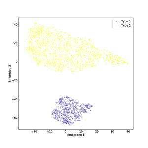
تعتمد خوارزمية t-SNE على معلمة قابلة للضبط، وهي الحيرة، والتي تتوافق بشكل فضفاض مع العدد المتوقع من جيران النقطة النموذجية في مجموعة البيانات قيد النظر. يمكن أن يختلف التصور الذي ينتجه t-SNE بشدة مع تغير الحيرة ولا توجد قاعدة عامة حول كيفية اختيار القيمة الصحيحة لهذه المعلمة. قد يؤدي هذا إلى تصورات مضللة، لذا فمن الأفضل تجربة قيم مختلفة من الحيرة والحذر من الميزات (مثل مجموعات البيانات الفرعية) التي تظهر فقط في نطاق ضيق من الحيرة (Wattenberg et al. 2016). في الشكل 11 نستكشف تأثيرات الحيرة المتفاوتة بين و للنوع 1 والنوع 2 AGNs، بينما في الشكل 12 ندرج أيضًا النوع المتوسط AGNs.
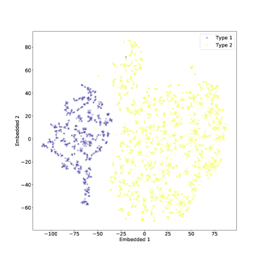
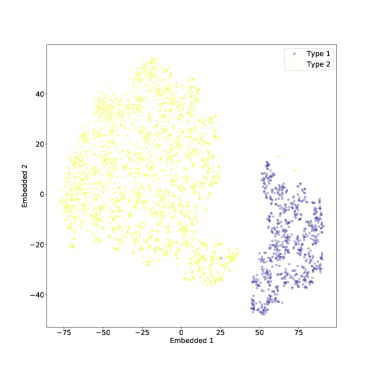
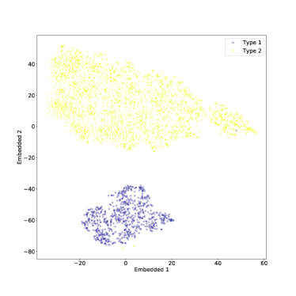
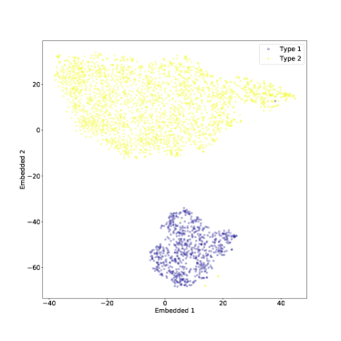
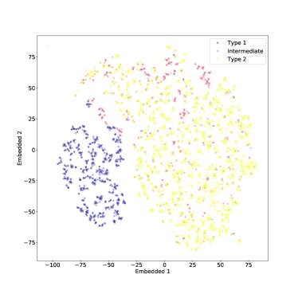
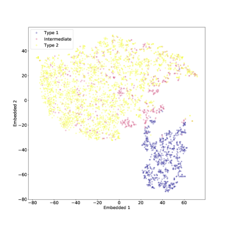
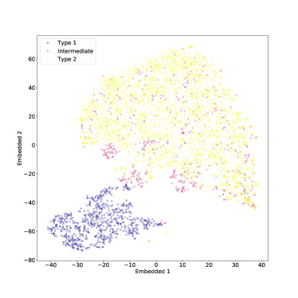
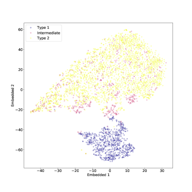
بعد ذلك، تم تغذية خوارزمية t-SNE ببيانات متدرجة ومتوسطة، حيث يتم التعبير عن كل ميزة بواسطة:
| (5) |
حيث هو متوسط الميزة i و هو الانحراف المعياري للميزة i. يمكن رؤية النتائج في الشكل 13، مع حيرة 50. يمكن رؤية نتيجة القيم الأخرى للحيرة في الشكل 14. بشكل عام، تكون النتيجة مشابهة للحالة غير الطبيعية، ويبدو أن t-SNE (مع الاختيار الصحيح للحيرة) يؤدي أداءً جيدًا أيضًا بعد قياس الميزات والتطبيع المتوسط. يمكن تفسير النتيجة الواردة في الشكل 13 بشكل أكثر وضوحًا على أنها انتقال من أطياف النوع 1، التي تتميز بخطوط عريضة واستمرارية قوية، إلى أطياف متوسطة، تتميز بخطوط أضيق واستمرارية أقل، ومن أطياف متوسطة إلى نوع 2، تتميز بخطوط ضيقة واستمرارية ثابتة تقريبًا. بالطبع ستظل بعض الأطياف المتوسطة متجمعة معًا مع النوع 1، أو في أغلب الأحيان مع النوع 2، ولكن هذه نتيجة متوقعة. في الواقع، فإن التمييز بين الأطياف المتوسطة والنوع 2 ليس صارمًا وقد تبدو أطياف النوعين متشابهة. ومع ذلك، يوضح الشكل منطقة انتقالية واضحة بين النوع 1 والنوع 2 المليئة بأطياف النوع المتوسط.
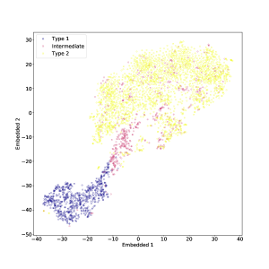
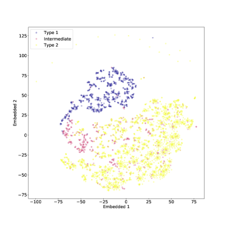
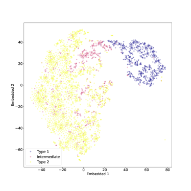
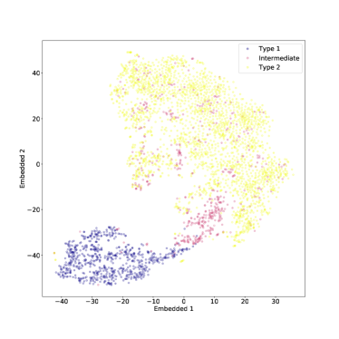
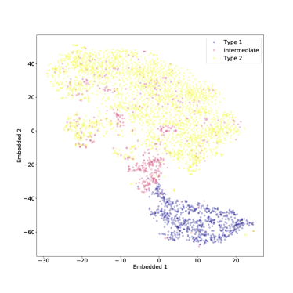